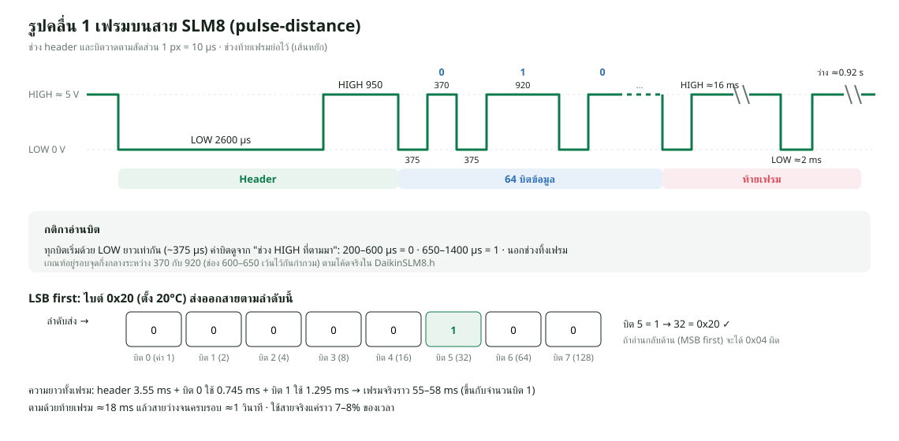
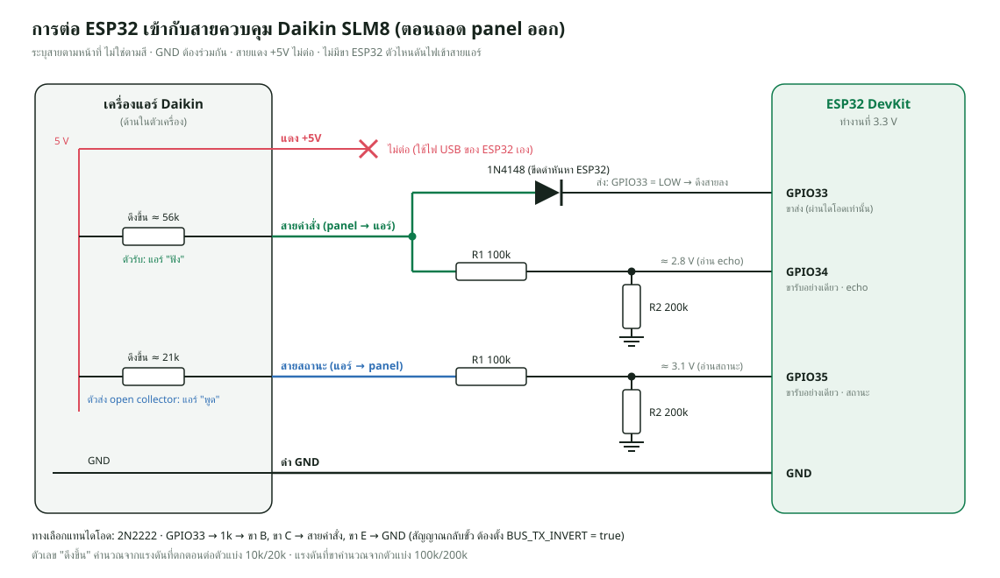

แอร์ Daikin ผ่านสาย SLM8: จากการแกะโปรโตคอลถึงบอร์ดสายแอร์
ภาพรวม#
แอร์ห้องหนึ่งไม่ได้ใช้รีโมตอินฟราเรด แต่ใช้ แผงควบคุมติดผนังแบบมีสาย (wired controller) รุ่น SLM8 ของ Daikin ซึ่งต่อกับแอร์ด้วยสาย 4 เส้น โปรโตคอลบนสายนี้เป็นของผู้ผลิตโดยเฉพาะและไม่มีเอกสารเผยแพร่ บทนี้เล่าว่าเราแกะมันได้อย่างไรทีละขั้น ตั้งแต่ไม่รู้อะไรเลย จนรู้รูปแบบสัญญาณ โครงสร้างเฟรม สูตร checksum ความหมายของคำสั่ง ให้ ESP32 ส่งเฟรมออกสายได้ แล้วจบที่ บอร์ดสายแอร์ตัวจริง firmware/rmutt_esp32_air_wired/ ที่ใช้แทนรีโมตติดผนังและต่อเข้าระบบเดียวกับบอร์ด IR
ที่มา: โปรเจค RMUTT Save Energy ควบคุมแอร์ผ่านแอปด้วย IR อยู่แล้ว (บทเฟิร์มแวร์ ESP32) แต่แอร์ห้องนี้ใช้ panel แบบมีสาย จึงต้องหาวิธีคุยกับแอร์ผ่านสายแทน
เป้าหมาย: ให้ ESP32 ส่งคำสั่ง (เปิด/ปิด อุณหภูมิ โหมด พัดลม สวิง) และอ่านสถานะจากแอร์ได้เหมือน panel โดยผู้ใช้สั่งผ่านแอปและเว็บเหมือนแอร์ IR ทุกเครื่อง
สถานะ ณ วันที่ 14 ต.ค. 2569 (เปลี่ยน 14 ต.ค. 2569 — ฉบับก่อนเป็นสถานะวันที่ 9 ต.ค.)
| เรื่อง | สถานะ |
|---|---|
| แกะโปรโตคอลฝั่ง panel → แอร์ ครบทุกคำสั่งหลัก | ✅ เสร็จ ทุกเฟรมที่จับได้ผ่าน checksum |
| ESP32 ส่งเฟรมออกสายได้ถูกต้อง | ✅ ยืนยันด้วย echo และบันทึกรูปคลื่น (9 ต.ค.) |
| ESP32 อ่านเฟรมสถานะจากแอร์ | ✅ อ่านได้ 30 C4 00 00 00 00 00 30 |
| โค้ดเข้า repository | ✅ DaikinSLM8.h, wired_bus.h, rmutt_esp32_air_wired.ino (เพิ่ม 11 ต.ค. 2569, commit a5a227f) |
| เฟิร์มแวร์บอร์ดสายแอร์ | ✅ รุ่น 2.5.1-slm8 (11 ต.ค.) ปัจจุบัน 2.5.2-slm8 (13 ต.ค. เพิ่มคำสั่ง unprovision) |
| ส่งเฟรมทุก 1 วินาทีใน FreeRTOS task แยก | ✅ ไม่สะดุดตอนต่อ Wi-Fi / MQTT / OTA / อ่าน PZEM |
| รีบูตบอร์ดแล้วแอร์ไม่ดับ | ✅ ส่งค่าที่จำไว้ใน NVS ตั้งแต่เฟรมแรก |
| อุณหภูมิห้องให้แอร์ | ✅ DHT11 ที่ GPIO4 แทนเทอร์มิสเตอร์ของ panel (เดิมใช้ค่าคงที่ 28°C) |
| รายงานสถานะจากแอร์ | ✅ busOk (สายตอบไหม), compressorRunning, unitRoomTemperature ใน MQTT status |
| BLE / MQTT / PZEM / OTA / ตารางเวลา / ข้อมูลย้อนหลัง / OLED | ✅ เหมือนบอร์ด IR ทุกอย่าง |
| Backend / แอป / เว็บ รู้จักบอร์ดนี้ | ✅ โปรโตคอล DAIKIN_WIRED แสดงเป็น "Daikin · สายแอร์" |
| แอร์ทำตามคำสั่งจาก ESP32 จริงหลังย้ายสายส่ง | ⏳ ใน repository ยังไม่มีบันทึกผลทดสอบกับแอร์จริง มีแต่ขั้นตอนทดสอบใน README_WIRED_TH.md |
| แอร์ต้องการแฟล็กคำสั่งใหม่ไหม / ทำอะไรเมื่อเฟรมหยุด | ⏳ ยังไม่ทดสอบ |
| บิต TURBO / QUIET | ⏳ ยังไม่แกะ (จัมเปอร์ J2 ปิดไว้) |
(เปลี่ยน 14 ต.ค. 2569) ฉบับก่อนของบทนี้เขียนว่าโค้ดยังไม่อยู่ใน repository และโค้ดที่ยกเป็น "ตัวอย่างอธิบายหลักการ" ตอนนี้โค้ดจริงเข้ามาแล้ว ทุกบล็อกโค้ดในบทนี้ที่มีเลขบรรทัดจึงเป็นโค้ดจริงจากไฟล์ใน repository ส่วนเรื่องเล่าการแกะโปรโตคอล (ขั้นที่ 1–8) ยังมาจากบันทึกการทดลอง slm8_protocol_notes_TH.md (8–9 ต.ค.) และโปรแกรมทดลอง slm8_*.ino ซึ่ง ยังไม่อยู่ใน repository จุดไหนที่โค้ดจริงต่างจากบันทึกเดิม บทนี้เขียนกำกับไว้ว่า "เปลี่ยน"
ไฟล์ในโฟลเดอร์ firmware/rmutt_esp32_air_wired/#
| ไฟล์ | บรรทัด | หน้าที่ |
|---|---|---|
rmutt_esp32_air_wired.ino |
2031 | เฟิร์มแวร์หลัก 2.5.2-slm8 แตกมาจากบอร์ด IR เปลี่ยนเฉพาะช่องทางสั่งแอร์ + DHT11 + สถานะจากแอร์ |
DaikinSLM8.h |
321 | โปรโตคอลสายแอร์: สร้าง/อ่านเฟรม, checksum, ตัวรับ (Rx), ตัวส่ง (Tx), ตัวคุม (Controller) |
wired_bus.h |
102 | ห่อ Controller ให้ทำงานใน FreeRTOS task แยก พร้อม mutex |
README_WIRED_TH.md |
130 | วิธีต่อสาย ไลบรารี ขั้นทดสอบหลังแฟลช และค่าที่ปรับได้ |
build_opt.h |
1 | -DU8X8_NO_HW_I2C -DU8X8_NO_HW_SPI ปิดไดรเวอร์ฮาร์ดแวร์ที่ U8g2 ไม่ใช้ ประหยัดแฟลช |
partitions.csv |
12 | แบ่งแฟลช 4MB เป็น 2 ช่องแอป (OTA) + rmuttlog 64KB เหมือนบอร์ด IR |
history_log.h, ota_update.h, letsencrypt_ca.h |
— | สำเนาเดียวกับบอร์ด IR (ดูบทเฟิร์มแวร์) |
oled_display.h, oled_ui.h |
— | จอ OLED (ดูบทเฟิร์มแวร์ ส่วนจอ OLED) บอร์ดนี้เพิ่มป้าย BUS และ COMP ON |
ทำไมการคุยผ่านสายดีกว่า IR
IR ส่งได้ทางเดียว ระบบไม่มีทางรู้ว่าแอร์ได้รับคำสั่งไหม ต้องเดาจากกำลังไฟที่ PZEM วัด (ดูเรื่อง isPoweredOn ในบท Flutter ตอนที่ 1) แต่สาย SLM8 เป็นการสื่อสาร สองทาง แอร์ส่ง "เฟรมสถานะ" กลับมาทุก 1 วินาที บอกตรง ๆ ว่าคอมเพรสเซอร์ทำงานไหม ไม่ต้องติดตั้งตัวยิงให้มองเห็นตาแอร์ และไม่โดนแสงหรือสิ่งกีดขวางรบกวน
ความรู้ที่ต้องมีก่อนอ่านบทนี้#
ถ้ายังไม่คุ้นกับไฟฟ้าดิจิทัล อ่านตารางนี้ให้เข้าใจก่อน เพราะทุกขั้นถัดไปใช้คำเหล่านี้
| คำ | ความหมายแบบสั้น | ใช้ตรงไหนในบทนี้ |
|---|---|---|
| ระดับลอจิก (logic level) | แรงดันที่ชิปตีความเป็น 0 หรือ 1 ESP32 ทำงาน 3.3 V ขารับทนได้ราว 3.3 V และอ่านเป็น HIGH เมื่อเกินราว 2.5 V (75% ของ 3.3 V) | สายแอร์ใช้ 5 V ต่อตรงไม่ได้ |
| ตัวต้านทานดึงขึ้น (pull-up) | ตัวต้านทานที่ทำให้สายค้าง HIGH ตอนไม่มีใครส่ง | แอร์มี pull-up อ่อนมากในตัว |
| Open collector / open drain | วงจรส่งที่ทำได้แค่ "ดึงลงเป็น 0 V" หรือ "ปล่อย" ไม่เคยดันไฟขึ้นเอง | ทั้ง panel และแอร์ส่งแบบนี้ ESP32 ก็ต้องทำแบบนี้ |
| ตัวแบ่งแรงดัน (voltage divider) | ตัวต้านทาน 2 ตัวอนุกรม ลดแรงดัน Vout = Vin × R2 / (R1 + R2) |
ลด 5 V เหลือราว 3.3 V |
| Loading effect | เครื่องวัดที่ดึงกระแสมาก ไปทำให้ค่าที่ถูกวัดเปลี่ยน | ตัวแบ่ง 10k/20k ทำสายตก |
| UART | การส่งข้อมูลอนุกรมที่นิยมที่สุด ทุกบิตกว้างเท่ากัน สายว่างค้าง HIGH | สมมติฐานแรกที่ผิด |
| Pulse-distance | บิต 0/1 แยกด้วย "ความยาวช่วงว่าง" หลังพัลส์ที่ยาวเท่ากัน | การเข้ารหัสจริงของ SLM8 |
| LSB first | ส่งบิตค่าน้อยที่สุด (บิต 0) ของไบต์ก่อน | ต้องประกอบบิตกลับให้ถูกลำดับ |
| Nibble | ครึ่งไบต์ = 4 บิต = เลขฐาน 16 หนึ่งหลัก | สูตร checksum |
| BCD | เก็บเลขฐานสิบหลักละ nibble เช่น 25 เก็บเป็น 0x25 |
อุณหภูมิ |
| Checksum | ค่าที่คำนวณจากข้อมูล ใช้ตรวจว่าข้อมูลมาครบไม่เพี้ยน | ไบต์ 7 |
| Interrupt | ให้ชิปหยุดงานปกติชั่วคราวมาทำฟังก์ชันสั้น ๆ ทันทีที่ขาเปลี่ยนระดับ | จับเวลาขอบสัญญาณ |
| Simplex / full duplex | ส่งทางเดียว / ส่งสองทางพร้อมกัน | สายละทิศ รวมกันเป็น full duplex |
อุปกรณ์และเครื่องมือ#
ทั้งหมดเป็นอุปกรณ์ราคาถูก ไม่มี logic analyzer หรือ oscilloscope เราใช้ ESP32 ทำหน้าที่เครื่องมือวัดแทน
| อุปกรณ์ | ใช้ทำอะไร |
|---|---|
| ESP32 DevKit | ดักสัญญาณ วัดความกว้างพัลส์ (แม่นระดับ 1 µs ด้วย micros()) ถอดรหัส และส่งเฟรม |
| มัลติมิเตอร์ตั้งโต๊ะ | วัดแรงดันสาย ตรวจการต่อถึง หาขาทรานซิสเตอร์ |
| Breadboard + สายจัมเปอร์ | ต่อวงจรทดลอง |
| ตัวต้านทาน 100k (6 ตัว) | ทำตัวแบ่งแรงดันสองชุด (บน 100k, ล่าง 200k = 100k สองตัวอนุกรม) |
| ไดโอด 1N4148 หรือทรานซิสเตอร์ 2N2222 | ให้ ESP32 ดึงสาย 5 V ลงได้โดยไม่เสียหาย |
| Arduino IDE + Serial Monitor | อัปโหลดโค้ด อ่านผล และพิมพ์ป้ายกำกับ (MARK) ระหว่างทดลอง |
| สคริปต์ Python ในคอม | ถอดรหัสซ้ำจากข้อมูลดิบ และทดสอบสูตร checksum หลายสูตร |
ทำไมใช้ 100k สองตัวต่ออนุกรมแทนตัว 200k: ใช้ตัวต้านทานค่าเดียวทั้งชุด หาซื้อง่าย และสัดส่วน 2:1 มักแม่นกว่า เพราะตัวต้านทานล็อตเดียวกันมักคลาดเคลื่อนไปทางเดียวกัน
โปรแกรมที่เขียนขึ้นระหว่างงาน (เรียงตามลำดับที่ใช้)#
แต่ละโปรแกรมตอบคำถามหนึ่งข้อ แล้วคำตอบนั้นกำหนดว่าโปรแกรมถัดไปต้องทำอะไร
| ลำดับ | โปรแกรม | คำถามที่ต้องการตอบ | ผล |
|---|---|---|---|
| 1 | slm8_sniffer |
เป็น UART หรือเปล่า | ไม่ใช่ UART |
| 2 | slm8_timing |
สัญญาณจริงหน้าตาเป็นอย่างไร (logic analyzer แบบง่าย) | เห็นพัลส์ 3 ขนาด → pulse-distance |
| 3 | slm8_decoder |
แต่ละเฟรมมีข้อมูลอะไร | ถอดเฟรมสด พิมพ์เฉพาะตอนข้อมูลเปลี่ยน |
| 4 | DaikinSLM8.h |
รวมการรับส่งไว้ที่เดียว | ไลบรารีที่โปรแกรมหลังจากนี้ใช้ร่วมกัน (อยู่ใน repository แล้ว 11 ต.ค.) |
| 5 | slm8_wiretest |
สายและขาอยู่ระดับไหน ดึงลงได้ไหม | พบปัญหาตัวแบ่ง 10k/20k |
| 6 | slm8_scope |
ตอน ESP32 ส่ง เกิดอะไรขึ้นบนสายทั้งสองเส้น | พบว่าต่อวงจรส่งผิดเส้น |
| 7 | slm8_control |
ESP32 แทน panel ได้ไหม | ส่งคำสั่ง + รับสถานะ + ตรวจสายตอนบูต |
| 8 | wired_bus.h + rmutt_esp32_air_wired.ino |
ใช้งานจริงร่วมกับแอปได้ไหม | บอร์ดสายแอร์ 2.5.1-slm8 (เพิ่ม 11 ต.ค. 2569) |
ในบันทึกยังมี slm8_pzem.ino ซึ่งเป็นแบบต่อกลางสาย (อยู่ระหว่าง panel กับแอร์) พร้อมอ่าน PZEM-004T ด้วย แนวคิดนี้กลายเป็นโหมด BRIDGE ใน DaikinSLM8.h (มีโค้ดแต่เฟิร์มแวร์ตอนนี้ใช้โหมด REPLACE_PANEL อย่างเดียว) โปรแกรม slm8_* ข้อ 1–3 และ 5–7 ยังไม่อยู่ใน repository
ขั้นที่ 1: ค้นคว้าก่อนลงมือ#
ไม่มีใครเผยแพร่โปรโตคอลของ SLM8 เราจึงเริ่มจากหลักฐานบนบอร์ด แล้วเทียบกับโปรโตคอล Daikin ที่มีคนแกะไว้แล้ว เพื่อให้รู้ว่า "น่าจะเป็นอะไร" และ "ตัดอะไรทิ้งได้"
อ่านหลักฐานจากบอร์ด panel#
| สิ่งที่เห็น | บอกอะไรเรา |
|---|---|
ป้าย WC, SLM9 (SLM8) S9 EC 10M DAIKIN |
เป็น wired controller ของ Daikin ตลาดมาเลเซีย คนละสายกับรุ่นญี่ปุ่น เอกสารของรุ่นญี่ปุ่นจึงใช้ไม่ได้ |
ชิปหลัก SLM8EC R3/R4 |
ไมโครคอนโทรลเลอร์เฟิร์มแวร์เฉพาะ ไม่มี datasheet สาธารณะ |
ขั้วสกรู TX/RCV (YELLOW), GND (BLACK), +5V (RED), TX (WHITE) |
สายสัญญาณ 2 เส้น + ไฟเลี้ยง 5 V จากแอร์ น่าจะเป็นสัญญาณดิจิทัล 5 V |
เทอร์มิสเตอร์ TH1 |
panel วัดอุณหภูมิห้องเอง แล้วน่าจะส่งให้แอร์ (ภายหลังยืนยันว่าจริง อยู่ในไบต์ 2) |
จัมเปอร์ J1 20-30C, J2 TURBO_QUIET |
บางฟังก์ชันเปิดปิดด้วยฮาร์ดแวร์ (ภายหลังอธิบายได้ว่าทำไม TURBO กดไม่ติด) |
เทียบกับโปรโตคอลที่มีคนแกะแล้ว#
| โปรโตคอล | ลักษณะ | ตรงกับ SLM8 ไหม |
|---|---|---|
| Daikin S21 (โปรเจค Faikin) | UART 2400 baud 8E2 มีไบต์ STX/ETX | ไม่ตรง ไม่ใช่ UART |
| Daikin P1P2 / HBS | บัสสองสาย ไฟราว 15 V ใช้ชิป MM1192 | ไม่ตรง สายเรา 5 V และแยกเส้นส่งกับเส้นรับ |
| Daikin IR (รีโมต) | pulse-distance บนคลื่นพาห์ 38 kHz | รูปแบบบิตคล้ายกัน (พบทีหลัง) แต่ไม่มีคลื่นพาห์ |
แหล่งที่ใช้เทียบ: ESP32-Faikin (github.com/Amtho/ESP32-Daikin), บทความ Daikin ESP32 WiFi controller ของ Greg Davill (P1P2), Daikin-IR-Reverse (github.com/blafois) และหน้า Wiring ของ ESP32-Faikout (S21)
สมมติฐานแรกและแผนสำรอง#
สมมติฐานแรกคือ UART 5 V เพราะป้ายเขียนว่า TX/RCV ภายหลังพิสูจน์ว่าผิด เนื่องจากไม่มีเอกสารเลย จึงเตรียมแผนสำรองไว้ตั้งแต่ต้น คือให้ ESP32 "กดปุ่ม" บน panel ผ่าน optocoupler PC817 ซึ่งไม่ต้องรู้โปรโตคอลเลย แต่จะไม่ได้ข้อมูลสถานะกลับมา
ทำไมต้องมีแผนสำรอง งานแกะโปรโตคอลไม่รับประกันว่าจะสำเร็จ ถ้าตั้งเป้าทางเดียวแล้วติด โปรเจคจะไม่มีทางควบคุมแอร์ห้องนี้เลย การมีแผน B ที่แย่กว่าแต่ทำได้แน่ ๆ ทำให้กล้าลองแผน A ที่ดีกว่า
ขั้นที่ 2: ฟังสัญญาณ#
หลักสำคัญคือ ฟังอย่างเดียวก่อน แล้วค่อย ๆ เพิ่มความละเอียด จากง่ายไปยาก แต่ละรอบตัดสมมติฐานที่ผิดออกไป ตารางนี้เรียงตามลำดับที่ทำจริง รวมความผิดพลาดที่เกิดขึ้นด้วย
| รอบ | ทำอะไร | สิ่งที่เห็น | สรุป |
|---|---|---|---|
| 1 | อ่านแบบ UART ให้โค้ดเดา baud เอง | เดาได้ 57600 ไบต์มั่ว FE FF BF 1B สาย HIGH แค่ 53% ของเวลา |
ไม่ใช่ UART (UART จะค้าง HIGH เกิน 80% เพราะสายว่างเป็น HIGH) |
| — | โค้ดเก่าใน ESP32 ตั้งขาเป็นขาออก | แอร์เปิดเอง กดปุ่ม panel ไม่ได้ | ต้องอัปโหลดโค้ดที่ฟังอย่างเดียวก่อนต่อสายทุกครั้ง |
| 2 | บันทึกความกว้างพัลส์ทุกตัว (ยังไม่ต่อกราวด์ร่วม) | HIGH ~10 ms สลับ LOW ~10 ms = 50 Hz และพัลส์ 2–4 µs หลายพัน | เห็นแต่ไฟบ้านรบกวน เพราะ GND ไม่ถึงกัน |
| 3 | ต่อ GND ร่วม แล้วบันทึกใหม่ | พัลส์เหลือแค่ 3 ขนาด: 375, 370, 920 µs ไม่มีขอบหาย | เห็นสัญญาณจริงครั้งแรก |
| 4 | เขียนตัวถอดรหัสสด | บางเฟรมขาด (ได้ 59 บิต, 11 บิต) | บั๊กจับเวลาในโค้ด (interrupt แทรกระหว่างอ่านเวลา) แก้แล้ว |
| 5 | กดปุ่มทีละปุ่ม พิมพ์ MARK กำกับ | ไบต์เปลี่ยนตรงตามปุ่ม | แกะความหมายได้ (ขั้นที่ 6) |
ทำไมไม่ต่อ GND แล้วเห็น 50 Hz แรงดันเป็นค่า "เทียบกับจุดอ้างอิง" ถ้า GND ของ ESP32 กับ GND ของแอร์ไม่ถึงกัน ขารับของ ESP32 จะลอย และรับสนามไฟฟ้าจากสายไฟบ้าน 220 V 50 Hz รอบตัวเข้ามาแทน (คาบ 20 ms = HIGH 10 ms + LOW 10 ms ตรงกับที่เห็นพอดี) ต่อ GND ร่วมก่อนทุกอย่างเสมอ
ทำไมข้อมูลที่ "ส่งมาตลอด" ไม่ใช่ปัญหา#
สายนี้ส่งเฟรมทุก 1 วินาทีไม่ว่าจะกดปุ่มหรือไม่ ถ้าพิมพ์ทุกเฟรม หน้าจอจะเต็มไปด้วยเฟรมซ้ำจนหาเฟรมที่สนใจไม่เจอ เราใช้เทคนิค พิมพ์เฉพาะตอนเฟรมเปลี่ยน เฟรมที่ซ้ำจะเงียบ พอกดปุ่มจะมีเฟรมใหม่ขึ้นมา พร้อมเครื่องหมาย * บนไบต์ที่เปลี่ยน ตัวอย่างหน้าตาผลลัพธ์ (เขียนตามรูปแบบในบันทึก ค่าคำนวณ checksum จริง):
A: 19 00 25 02 02 00 02 70 ← baseline: ตั้ง 19°C, SLEEP
MARK temp 19->20
A: 20*00 25 02 02 00 12*00* ← ไบต์ 0 เปลี่ยน, ไบต์ 6 มีบิต 10 เพิ่ม, checksum เปลี่ยนตาม
A: 20 00 25 02 02 00 02*F0* ← ~4 วินาทีต่อมา บิต 10 ของไบต์ 6 ดับเอง
ตัวอย่างนี้ทำให้เห็นสองเรื่องพร้อมกัน คือไบต์ไหนเก็บอุณหภูมิ และบิต 10 ของไบต์ 6 เป็นแฟล็ก "คำสั่งใหม่" ที่ติดชั่วคราว
กฎความปลอดภัยที่ได้จากการทดลอง#
- อัปโหลดโค้ดได้เฉพาะตอนถอดสายจากแอร์ เพราะโค้ดเก่าที่ค้างในบอร์ดอาจส่งสัญญาณมั่วเข้าแอร์ทันทีที่บูต
- ขารับใช้ GPIO34/35 ซึ่งเป็นขารับอย่างเดียวในฮาร์ดแวร์ของ ESP32 ต่อให้เขียนโค้ดพลาดสั่ง
OUTPUTก็ส่งออกไม่ได้ - GND ของ ESP32 ต้องต่อกับสายดำเสมอ สายแดง +5 V ไม่ต่อ (ESP32 ใช้ไฟ USB ของตัวเอง)
ทำไมเลือก GPIO34/35 เป็นขารับ นี่คือการออกแบบให้ "พลาดแล้วไม่พัง" (fail-safe) แทนที่จะพึ่งความระวังของคนเขียนโค้ด เราเลือกขาที่ฮาร์ดแวร์ห้ามส่งออกตั้งแต่ต้น บั๊กประเภทแอร์เปิดเองจึงเกิดซ้ำจากขารับไม่ได้อีก
ขั้นที่ 3: การเข้ารหัสระดับบิต (pulse-distance)#
สัญญาณใช้การเข้ารหัสแบบ pulse-distance ทุกบิตเริ่มด้วย LOW ยาวเท่ากัน แล้วค่าบิตบอกด้วยความยาวช่วง HIGH ที่ตามมา หลักเดียวกับรีโมต IR แต่ไม่มีคลื่นพาห์ 38 kHz

| ส่วน | LOW (µs) | HIGH (µs) |
|---|---|---|
| Header (เริ่มเฟรม) | 2600 | 950 (ฝั่งแอร์ใช้ ~985) |
| บิต 0 | 375 | 370 |
| บิต 1 | 375 | 920 |
| ท้ายเฟรม | 375 ตามด้วย HIGH คั่น แล้ว LOW 2000 | 16000 (ช่วงคั่น) |
รู้ได้อย่างไรว่าเป็น pulse-distance#
ใช้วิธี ตัดตัวเลือก: เขียนไว้ก่อนว่าถ้าเป็นการเข้ารหัสแบบนั้นจริง ต้องเห็นอะไร แล้วเทียบกับข้อมูลจริง
| การเข้ารหัส | จะเห็นอะไรถ้าใช่ | ผล |
|---|---|---|
| UART | สายค้าง HIGH นาน ความกว้างพัลส์เป็นผลคูณของความกว้าง 1 บิต | ไม่ใช่ |
| Manchester | พัลส์ 2 ขนาดสัดส่วน 1:2 ทั้งช่วง HIGH และ LOW | ไม่ใช่ เพราะ LOW ยาวเท่ากันตลอด |
| Pulse-width (PWM) | ความยาวช่วง LOW เปลี่ยนตามบิต | ไม่ใช่ |
| Pulse-distance | LOW คงที่ HIGH มี 2 ขนาด | ตรง |
วิธีถอดในโค้ด#
กติกาที่ใช้ถอดจริงใน DaikinSLM8.h (เปลี่ยน 14 ต.ค. 2569 — ฉบับก่อนเขียนเกณฑ์แบบหยาบ "HIGH สั้นกว่า 650 µs = 0" ตามบันทึก ตัวเลขด้านล่างคือค่าจริงในโค้ด)
- ตั้ง interrupt ทุกขอบสัญญาณ (ทั้งขาขึ้นและขาลง) เก็บ "ระดับ + ความยาว" ของช่วงที่เพิ่งจบลง ring buffer
- ช่วงสั้นกว่า 80 µs ถือเป็นสัญญาณรบกวน รวมเข้ากับช่วงข้างเคียง
- เจอ LOW 2300–3000 µs ตามด้วย HIGH 700–1300 µs = เริ่มเฟรม
- ในเฟรม: LOW ต้องยาว 200–550 µs, HIGH 200–600 µs = บิต 0, HIGH 650–1400 µs = บิต 1, HIGH 600–650 µs ไม่นับเป็นอะไร ทิ้งเฟรม (ช่องว่างกันกำกวม)
- HIGH ยาวตั้งแต่ 3000 µs = จบเฟรม หรือสายเงียบเกิน 20 ms หลังมีบิตแล้ว ต้องได้ครบ 64 บิตและ checksum ถูก ไม่งั้นทิ้งและนับ
bad_
ทำไมเกณฑ์เป็นช่วงกว้าง ๆ ไม่ใช่ค่าตรง ๆ สัญญาณจริงไม่เคยเป๊ะ ฝั่งแอร์ใช้ header HIGH ~985 µs ส่วน panel ~950 µs และ ESP32 ที่ส่งผ่านไดโอดได้ 347/896 µs การตั้งเกณฑ์รอบ "จุดกึ่งกลาง" ระหว่างสองค่าที่ต้องแยก (ราว 600–650 อยู่กลางระหว่าง 370 กับ 920) ทำให้ทนความคลาดเคลื่อนได้มากที่สุดทั้งสองฝั่ง ส่วนการมี "ขอบบน" ด้วย (เช่น บิต 1 ต้องไม่เกิน 1400 µs) ช่วยทิ้งพัลส์ประหลาดที่ไม่ใช่บิต แทนที่จะเดาว่าเป็น 1
โค้ดแบ่งเป็นสองชั้น: ISR (ฟังก์ชันที่ interrupt เรียก) ทำแค่จดเวลาลง ring buffer ส่วน poll() ซึ่งรันใน task ปกติเป็นคนถอดรหัส เริ่มจากส่วนที่ ISR ทำ
ไฟล์ firmware/rmutt_esp32_air_wired/DaikinSLM8.h บรรทัด 181–191 (ISR)
181 182 183 184 185 186 187 188 189 190 191 | |
| บรรทัด | อธิบาย |
|---|---|
| 181 | IRAM_ATTR วางฟังก์ชันไว้ใน RAM ภายใน เพราะ interrupt ต้องเรียกได้ทันทีแม้ตอนแฟลชกำลังถูกเขียน (เช่น ตอนบันทึก NVS) void* arg คือ pointer ที่ส่งมาตอน attachInterruptArg ทำให้ ISR ตัวเดียวใช้ได้กับหลายขา |
| 182 | แปลง arg กลับเป็น pointer ของ Rx ตัวที่เป็นเจ้าของขานี้ (มี 2 ตัว: ขาสถานะ GPIO35 และขา echo GPIO34) |
| 183–185 | ความยาวช่วงที่เพิ่งจบ = เวลาขอบนี้ − เวลาขอบก่อน แล้วจำเวลาขอบนี้ไว้ ลบแบบ uint32_t ถูกต้องแม้ micros() วนรอบ (ทุก ~71 นาที) |
| 186–188 | อ่านระดับ "หลัง" ขอบ ระดับของช่วงที่เพิ่งจบจึงเป็นค่าตรงข้าม !now |
| 187, 190 | เขียนลงช่อง head_ แล้วเลื่อน head_ ไปช่องถัดไปแบบวนรอบ (% RB, RB = 512) |
ไฟล์ firmware/rmutt_esp32_air_wired/DaikinSLM8.h บรรทัด 85–112 (เริ่มรับ และ poll())
85 86 87 88 89 90 91 92 93 94 95 96 97 98 99 100 101 102 103 104 105 106 107 108 109 110 111 112 | |
| บรรทัด | อธิบาย |
|---|---|
| 85–88 | ประกาศล่วงหน้า (forward declaration) ของคลาสและ ISR คอมเมนต์บอกเหตุผล: ถ้าเขียน ISR แบบ inline ในไฟล์ .h linker ของ ESP32 core 3.x จะฟ้อง dangerous relocation: l32r จึงย้ายออกมาเป็น static |
| 94 | INPUT เฉย ๆ ไม่มี pull-up ภายใน (GPIO34/35 ไม่มีอยู่แล้ว) ระดับมาจากตัวแบ่ง 100k/200k |
| 96 | attachInterruptArg(..., this, CHANGE) เรียก ISR ทุกขอบ และส่ง this ไปเป็น arg |
| 102–106 | ดึงข้อมูลออกจาก ring buffer จนตามทัน head_ แต่ละช่องส่งให้ rawPulse() (ตัวกรองสัญญาณรบกวน) ถ้าได้เฟรมครบให้จำไว้ |
| 107–108 | อ่าน lastEdge_ ก่อน เรียก micros() คอมเมนต์ "see v2 bug" คือบั๊กเฟรมขาดในรอบที่ 4 ถ้าอ่านกลับลำดับ interrupt อาจแทรกแก้ lastEdge_ ให้ใหม่กว่า now ผลลบกลายเป็นเลขบวกมหาศาล |
| 109 | ถ้ากำลังรับบิตอยู่แต่สายเงียบเกิน 20 ms ให้ปิดเฟรม การแปลงเป็น int32_t ทำให้ผลลบ (กรณีด้านบน) ไม่ถูกตีความว่า "นานมาก" |
| 110 | คัดลอกเฟรมที่ผ่าน checksum ให้ผู้เรียก |
บั๊กเฟรมขาด (59 บิต, 11 บิต) ในรอบที่ 4 แก้อย่างไรในโค้ดจริง (เปลี่ยน 14 ต.ค. 2569) ฉบับก่อนแนะนำให้ปิด interrupt (noInterrupts()) ตอนคัดลอกข้อมูล แต่โค้ดจริงใช้วิธีที่ไม่ต้องปิด interrupt เลย คือ (1) ISR คำนวณความยาวช่วงให้เสร็จในตัวเอง (2) ส่งข้อมูลผ่าน ring buffer ที่ ISR เขียนฝั่ง head_ อย่างเดียว และ poll() อ่านฝั่ง tail_ อย่างเดียว (ผู้ผลิตหนึ่ง ผู้บริโภคหนึ่ง จึงไม่ชนกัน) (3) อ่าน lastEdge_ ก่อน micros() ข้อดีคือไม่มีช่วงที่ interrupt ถูกปิด ขอบสัญญาณจึงไม่หาย
ต่อมาคือตัวกรองสัญญาณรบกวนและ state machine (เครื่องสถานะ: ตัวแปรที่จำว่าตอนนี้อยู่ขั้นไหน IDLE → HDR → BITS)
ไฟล์ firmware/rmutt_esp32_air_wired/DaikinSLM8.h บรรทัด 134–162
134 135 136 137 138 139 140 141 142 143 144 145 146 147 148 149 150 151 152 153 154 155 156 157 158 159 160 161 162 | |
| บรรทัด | อธิบาย |
|---|---|
| 136 | ช่วงสั้นกว่า 80 µs = สัญญาณรบกวน เก็บเวลาไว้ใน pend_ ยังไม่ตัดสิน |
| 137 | ช่วงแรกสุดหลังบูต ใช้เป็นจุดตั้งต้นของ "ระดับที่นิ่ง" (stLvl_, stDur_) |
| 138 | ถ้าช่วงใหม่ระดับเดียวกับช่วงที่นิ่งอยู่ แปลว่ามี glitch คั่นตรงกลาง รวมเวลาทั้งหมดเป็นช่วงเดียว |
| 139–141 | ระดับเปลี่ยนจริง: ส่งช่วงเดิม (รวมเวลา glitch) ให้ pulse() แล้วเริ่มนับช่วงใหม่ |
| 147 | IDLE ยังไม่เจอ header ไม่ทำอะไร (ไปตรวจที่บรรทัด 160) |
| 149–150 | อยู่ HDR (เพิ่งเห็น header LOW) ถ้า HIGH ถัดมายาว 700–1300 µs = เริ่มเก็บบิต ไม่ใช่ก็กลับ IDLE |
| 153 | ช่วง LOW ภายในเฟรมต้องยาว 200–550 µs (ปกติ 375) ผิดช่วงนับเป็นเฟรมเสีย |
| 154–155 | HIGH 200–600 = บิต 0, 650–1400 = บิต 1 |
| 156 | HIGH ≥ 3000 µs คือช่วง ~16 ms ท้ายเฟรม = ปิดเฟรม |
| 157 | HIGH ที่ไม่เข้าช่วงไหนเลย (เช่น 620 µs หรือ 2000 µs) = เฟรมเสีย |
| 160 | ตรวจ "หลัง" switch เสมอ ทำให้ LOW 2300–3000 µs เริ่มเฟรมใหม่ได้ทันทีแม้เพิ่งทิ้งเฟรมเก่า |
ไฟล์ firmware/rmutt_esp32_air_wired/DaikinSLM8.h บรรทัด 164–178
164 165 166 167 168 169 170 171 172 173 174 175 176 177 178 | |
| บรรทัด | อธิบาย |
|---|---|
| 165 | เกิน 64 บิต = ผิดรูปแบบ ทิ้ง (กันเขียนเลยขอบ array) |
| 166–167 | หาว่าบิตนี้อยู่ไบต์ไหน ถ้าเป็นบิตแรกของไบต์ให้ล้างไบต์เป็น 0 ก่อน |
| 168 | 1 << (nbits_ % 8) คือหัวใจของ LSB first บิตที่มาก่อนในแต่ละไบต์ไปอยู่ตำแหน่งค่าน้อย (บิต 0) |
| 174 | ต้องครบ 64 บิตพอดี และ checksum ถูก ไม่งั้นนับ bad_ |
| 175–176 | คัดลอกเข้า frame_ (บัฟเฟอร์ที่ poll() ส่งออก) และจำเวลาเฟรมดีล่าสุดไว้ใช้ตัดสินว่า "สายยังตอบ" |
ทำไมแยก bytes_ (กำลังประกอบ) กับ frame_ (เฟรมดีล่าสุด): ถ้าเฟรมใหม่เสียกลางทาง frame_ ยังเป็นเฟรมดีชุดก่อน ผู้เรียกไม่มีวันเห็นเฟรมครึ่ง ๆ กลาง ๆ
ขั้นที่ 4: โครงสร้างเฟรม#
1 เฟรม = 8 ไบต์ (64 บิต) ส่งบิตต่ำก่อน (LSB first) ไบต์สุดท้ายเป็น checksum แต่ละสายส่งเฟรมของตัวเองทุก 1 วินาที
| ไบต์ | 0 | 1 | 2 | 3 | 4 | 5 | 6 | 7 |
|---|---|---|---|---|---|---|---|---|
| ตัวอย่าง | 20 |
00 |
25 |
02 |
02 |
00 |
02 |
F0 |
| ความหมาย | ตั้ง 20°C | — | ห้อง 25°C | Cool, เปิด | พัดลม 2 | ไม่สวิง | SLEEP | checksum |
หลักฐานว่าส่งบิตต่ำก่อน#
ตอนตั้งหน่วยเป็น °F ถ้าอ่านแบบบิตสูงก่อน ไบต์แรกได้ 16 ซึ่งไม่สื่ออะไร พอกลับลำดับบิตกลายเป็น 68 ตรงกับเลข 68°F บนจอ panel พอดี และสูตร checksum ก็ใช้ได้เฉพาะตอนอ่านแบบบิตต่ำก่อน หลักฐานสองทางที่ไม่ขึ้นต่อกันชี้ไปทางเดียวกัน จึงมั่นใจได้
0x16 = 0001 0110 (อ่านแบบ MSB first)
กลับลำดับบิต → 0110 1000 = 0x68 ✓ ตรงกับ 68°F บนจอ
เฟรมยาวเท่าไร#
| ส่วน | เวลา |
|---|---|
| Header | 2600 + 950 = 3550 µs |
| บิต 0 หนึ่งบิต | 375 + 370 = 745 µs |
| บิต 1 หนึ่งบิต | 375 + 920 = 1295 µs |
เฟรม 20 00 25 02 02 00 02 F0 (มีบิต 1 อยู่ 11 บิต) |
3550 + 53×745 + 11×1295 ≈ 57.3 ms |
| ท้ายเฟรม | ≈ 18.4 ms |
ทั้งเฟรมใช้สายราว 75 ms ต่อรอบ 1 วินาที ที่เหลือสายว่าง ความเร็วขณะส่งราว 1 kbit/s ช้ามากเมื่อเทียบกับ UART ทั่วไป แต่พอสำหรับส่งสถานะแอร์ และทนสัญญาณรบกวนบนสายยาวได้ดี
ขั้นที่ 5: หาสูตร checksum#
ไบต์ 7 เปลี่ยนทุกครั้งที่ไบต์อื่นเปลี่ยน จึงน่าจะเป็น checksum เราลองสูตรที่พบบ่อยทีละสูตรกับทุกเฟรมที่จับได้ (ด้วยสคริปต์ Python ในคอม)
| สูตรที่ลอง | ผล |
|---|---|
| ผลรวมไบต์ 0–6 mod 256 | ไม่ตรง |
| XOR ไบต์ 0–6 | ไม่ตรง |
| 256 − ผลรวม | ไม่ตรง |
| ผลรวมทุก nibble (14 nibble) ของไบต์ 0–6 mod 16 | ตรงทุกเฟรม (14/14 ชุดแรก และทุกเฟรมหลังจากนั้น) |
สูตร: ให้ b0 … b6 เป็นไบต์ 0–6
s = (b0 >> 4) + (b0 & 0x0F) + (b1 >> 4) + (b1 & 0x0F) + … + (b6 >> 4) + (b6 & 0x0F)
b7 = (s mod 16) << 4 ← ผลอยู่ใน nibble บน, nibble ล่างของไบต์ 7 เป็น 0 เสมอ
ตัวอย่างคำนวณ#
| เฟรม (ไบต์ 0–6) | ผลรวม nibble | mod 16 | ไบต์ 7 |
|---|---|---|---|
20 00 25 02 02 00 02 |
2+0 + 0+0 + 2+5 + 0+2 + 0+2 + 0+0 + 0+2 = 15 | F | F0 ✓ |
20 00 25 02 02 F0 03 |
15 + 15 (F ของไบต์ 5) + 1 (ไบต์ 6 จาก 2 เป็น 3) = 31 | F | F0 ✓ |
20 00 25 02 02 00 00 |
2+2+5+2+2 = 13 | D | D0 ✓ |
30 C4 00 00 00 00 00 (เฟรมแอร์) |
3+0 + 12+4 = 19 | 3 | 30 ✓ |
สังเกตแถวที่ 2: เปิดสวิงทำให้ผลรวมเพิ่ม 16 พอดี mod 16 แล้วจึงได้ค่าเดิม F0 นี่คือข้อจำกัดของ checksum 4 บิต การเปลี่ยนแปลงบางแบบทำให้ "checksum ไม่เปลี่ยน" จึงจับไม่ได้
สคริปต์ Python ที่ใช้ตรวจสูตรกับทุกเฟรม (เขียนแบบเดียวกับที่ใช้ในงาน ลองรันเองได้):
def checksum(first7):
s = sum((b >> 4) + (b & 0x0F) for b in first7)
return (s % 16) << 4
frames = [
"20 00 25 02 02 00 02 F0",
"20 00 25 02 02 F0 03 F0",
"20 00 25 02 02 00 00 D0",
"30 C4 00 00 00 00 00 30",
"25 00 28 02 08 00 10 C0",
]
for text in frames:
b = [int(x, 16) for x in text.split()]
ok = checksum(b[:7]) == b[7]
print(text, "OK" if ok else "BAD")
checksum 4 บิตจับข้อผิดพลาดได้แค่ไหน มีค่าที่เป็นไปได้ 16 ค่า ถ้าข้อมูลเพี้ยนแบบสุ่ม โอกาสที่ checksum บังเอิญยังตรงคือ 1/16 (≈ 6%) จึงจับได้ราว 94% ไม่แข็งแรงเท่า CRC แต่สายนี้ส่งซ้ำทุก 1 วินาที เฟรมเสียหนึ่งเฟรมก็รอเฟรมถัดไปได้ และยังมีเกณฑ์เวลากับการนับครบ 64 บิตช่วยกรองอีกชั้น
พอรู้สูตรนี้ ESP32 สร้างเฟรมที่ถูกต้องเองได้ และตัวถอดรหัสก็ทิ้งเฟรมเสียได้อัตโนมัติ
สูตรเดียวกันในโค้ดจริง#
ไฟล์ firmware/rmutt_esp32_air_wired/DaikinSLM8.h บรรทัด 49–54
49 50 51 52 53 54 | |
| บรรทัด | อธิบาย |
|---|---|
| 49 | inline อนุญาตให้นิยามฟังก์ชันในไฟล์ .h ได้โดยไม่ชนกันตอน link แม้ถูก include หลายที่ |
| 51 | วนไบต์ 0–6 บวก nibble บน (>> 4) กับ nibble ล่าง (& 0x0F) รวม 14 nibble ผลรวมสูงสุด 14 × 15 = 210 ยังพอใน uint8_t |
| 52 | s & 0x0F = mod 16 แล้วเลื่อนไปไว้ nibble บน nibble ล่างของไบต์ 7 จึงเป็น 0 เสมอ |
| 54 | ตอนตรวจ เทียบเฉพาะ nibble บนของไบต์ 7 (& 0xF0) ถ้าแอร์ใส่อะไรใน nibble ล่างในอนาคตก็ยังไม่ทิ้งเฟรม |
ขั้นที่ 6: แกะความหมายของแต่ละไบต์#
ใช้วิธี เปรียบเทียบก่อน-หลัง (differential): เปลี่ยนทีละอย่าง แล้วดูว่าไบต์ไหนเปลี่ยนตาม ทำซ้ำอย่างน้อย 2 รอบเพื่อยืนยัน
- รอให้เฟรมนิ่ง (baseline)
- พิมพ์ป้ายกำกับลง Serial เช่น
temp 19->20เพื่อให้รู้ทีหลังว่าเฟรมไหนเกิดจากปุ่มอะไร - กดปุ่มบน panel ครั้งเดียว แล้วรอ 3–5 วินาที
- ดูไบต์ที่มีเครื่องหมาย
*และจดค่าบนจอ panel คู่กัน
ทำไมเปลี่ยนทีละอย่าง ถ้ากดสองปุ่มพร้อมกันแล้วมีสองไบต์เปลี่ยน เราจะไม่รู้ว่าไบต์ไหนเป็นของปุ่มไหน หลักเดียวกับการทดลองวิทยาศาสตร์ที่ควบคุมให้ตัวแปรเปลี่ยนทีละตัว ส่วนการทำซ้ำ 2 รอบช่วยแยก "ความหมายจริง" ออกจาก "บังเอิญ" เช่น อุณหภูมิห้องที่เปลี่ยนเองพอดีตอนกดปุ่ม
เฟรมคำสั่ง (เฟรม A: panel → แอร์)#
| ไบต์ | ความหมาย | ค่า | หลักฐาน |
|---|---|---|---|
| 0 | อุณหภูมิตั้ง (BCD ตามหน่วยบนจอ) | เช่น 20 = 20°C |
กด ▼: 68→67 (°F), กด ▲: 19→20 (°C) |
| 1 | ยังไม่ทราบ | 00 เสมอ |
— |
| 2 | อุณหภูมิห้อง (BCD) จากเทอร์มิสเตอร์ TH1 บน panel | 24–29 (°C), 77/79 (°F) |
ค่อย ๆ เปลี่ยนเองโดยไม่ได้กดอะไร |
| 3 | โหมด + ปิด | 02 Cool, 20 Dry, 01 Fan, บิต 10 = ปิด |
กด ON/OFF 4 ครั้ง กด MODE วน 2 รอบ |
| 4 | ความเร็วพัดลม | 04 ระดับ 1, 02 ระดับ 2, 01 ระดับ 3, 08 Auto |
กด FAN วน 2 รอบ |
| 5 | สวิง + หน่วย | nibble บน F = สวิง, บิต 01 = °F |
กด SWING, สลับ °C/°F |
| 6 | แฟล็ก | บิต 40 °F, 10 คำสั่งใหม่, 02 SLEEP, 01 สวิง |
บิต 10 ติด ~4 วินาทีหลังกดทุกปุ่ม |
| 7 | checksum | nibble บน | สูตรในขั้นที่ 5 |
- โหมดวน Cool → Dry → Fan → Cool (แอร์รุ่นนี้ทำความเย็นอย่างเดียว ไม่มี Heat)
- พัดลมวน 1 → 2 → 3 → Auto → 1 (ยืนยันสองรอบ)
- สวิงเปิด = ไบต์ 5
F0และ ไบต์ 6 บิต01ติด สวิงปิด = ไบต์ 500และบิต01ดับ - SLEEP = ไบต์ 6 บิต
02(ยืนยันด้วยการกดเปิด/ปิด 4 ครั้ง) โหมด Dry ยกเลิก SLEEP อัตโนมัติ - TURBO และ QUIET กดไม่ติด เพราะจัมเปอร์ J2
TURBO_QUIETบนบอร์ด panel ตั้งเป็นปิดไว้จากโรงงาน จึงยังไม่รู้บิตของสองฟังก์ชันนี้
BCD: ทำไมอ่านเลขฐาน 16 แล้วเห็นเลขบนจอตรง ๆ#
BCD (Binary-Coded Decimal) เก็บเลขฐานสิบหลักละ 4 บิต เลข 25 จึงเก็บเป็น 0x25 (nibble บน = 2, nibble ล่าง = 5) ไม่ใช่ 0x19 (ซึ่งคือ 25 ในฐานสองแบบปกติ) ข้อดีคือส่งไปแสดงบนจอตัวเลขได้ง่ายโดยไม่ต้องหาร ข้อเสียคือเปลืองค่า (A–F ในแต่ละ nibble ไม่ได้ใช้)
ไฟล์ firmware/rmutt_esp32_air_wired/DaikinSLM8.h บรรทัด 45–47
45 46 47 | |
| บรรทัด | อธิบาย |
|---|---|
| 45 | 25 → หลักสิบ 2 ไปไว้ nibble บน หลักหน่วย 5 ไว้ nibble ล่าง = 0x25 |
| 46 | ย้อนกลับ: 0x25 → 2 × 10 + 5 = 25 |
| 47 | แปลง °F เป็น °C แล้วปัดเศษด้วย lroundf (68°F → 20°C) ใช้ตอนอ่านเฟรมจาก panel/แอร์ที่ตั้งหน่วยเป็น °F ส่วนตอน ส่ง โค้ดใช้ °C เสมอ |
ไบต์ที่รวมหลายความหมาย: แยกด้วยบิต#
ไบต์ 3 และไบต์ 6 เก็บหลายเรื่องในไบต์เดียว แต่ละเรื่องใช้บิตคนละตำแหน่ง ตัวอย่าง ไบต์ 3 = 0x12
0x12 = 0001 0010
│ └─ บิต 0x02 = Cool
└────── บิต 0x10 = ปิด
→ "โหมด Cool แต่ปิดเครื่องอยู่" (เปิดอีกครั้งแอร์จะกลับมา Cool)
ในโค้ดใช้ AND กับ "หน้ากาก" (mask) เพื่อดูบิตเดียว เช่น if (frame[3] & 0x10) = ปิดอยู่ และใช้ OR เพื่อตั้งบิต เช่น frame[6] |= 0x02 = เปิด SLEEP ใช้ AND กับ NOT เพื่อล้างบิต เช่น frame[6] &= ~0x02 = ปิด SLEEP
ตารางความหมายกลายเป็นโค้ด: Settings, buildFrame(), parsePanelFrame()#
ทุกแถวในตารางเฟรม A ข้างบนกลายเป็นค่าคงที่และฟังก์ชันใน DaikinSLM8.h (เพิ่ม 11 ต.ค. 2569)
ไฟล์ firmware/rmutt_esp32_air_wired/DaikinSLM8.h บรรทัด 27–43
27 28 29 30 31 32 33 34 35 36 37 38 39 40 41 42 43 | |
| บรรทัด | อธิบาย |
|---|---|
| 28 | ค่าโหมดของไบต์ 3 ตรงกับที่แกะได้ (01 Fan, 02 Cool, 20 Dry) enum : uint8_t = ชุดค่าคงที่ชนิดไบต์เดียว ไม่ต้องตั้งชื่อชนิด |
| 29 | ค่าพัดลมของไบต์ 4 สังเกตว่า "ระดับ 3" (แรงสุด) = 01 และ "ระดับ 1" = 04 กลับด้านกับที่คนคาดไว้ ชื่อ FAN_1/2/3 ทำให้โค้ดส่วนอื่นไม่ต้องจำเลขฐาน 16 |
| 31–37 | Settings = ทุกอย่างที่ผู้ใช้สั่งได้บนสายนี้ (6 ค่า) ค่าเริ่มต้น "ปิด 25°C Cool Auto" |
| 38–42 | operator== / != ให้เทียบ Settings สองชุดได้ด้วย == ใช้ตัดสินว่า "ค่าเปลี่ยนจริงไหม" ก่อนตั้งแฟล็กคำสั่งใหม่ |
ไฟล์ firmware/rmutt_esp32_air_wired/DaikinSLM8.h บรรทัด 56–80
56 57 58 59 60 61 62 63 64 65 66 67 68 69 70 71 72 73 74 75 76 77 78 79 80 | |
| บรรทัด | อธิบาย |
|---|---|
| 58 | เลียนแบบ panel: โหมด Dry ไม่ส่ง SLEEP (ข้อสังเกตจากขั้นที่ 6) |
| 59 | ไบต์ 0 = อุณหภูมิตั้งแบบ BCD constrain บีบให้อยู่ 16–30 กันค่าหลุดช่วงไปถึงแอร์ |
| 60 | ไบต์ 1 ไม่รู้ความหมาย ส่ง 00 ตามที่เห็นเสมอ |
| 61 | ไบต์ 2 = อุณหภูมิห้อง BCD (0–99) ค่านี้แอร์ใช้ตัดสินว่าจะเดินคอมเพรสเซอร์ไหม |
| 62 | ไบต์ 3 = โหมด OR บิต 10 เมื่อ "ปิด" ตรงกับตัวอย่าง 0x12 = Cool แต่ปิด |
| 64–65 | สวิงต้องตั้งสองที่พร้อมกัน: ไบต์ 5 F0 และไบต์ 6 บิต 01 ไบต์ 6 ยังรวมแฟล็กคำสั่งใหม่ 10 และ SLEEP 02 ด้วย OR |
| 66 | ไบต์ 7 คำนวณ checksum จาก 7 ไบต์ที่เพิ่งใส่ |
| 71 | เฟรมจาก panel อาจเป็น °F (ไบต์ 5 บิต 01 หรือไบต์ 6 บิต 40) |
| 75–79 | ถอดกลับด้วย mask: ปิด = บิต 10, โหมด = & 0x23 (เก็บเฉพาะบิตโหมด 3 ตัว), พัดลม = nibble ล่าง |
parsePanelFrame() ใช้เฉพาะโหมด BRIDGE (มี panel ต่อผ่าน ESP32) เฟิร์มแวร์ตอนนี้ใช้โหมด REPLACE_PANEL จึงเรียกแค่ buildFrame() ลองป้อนโจทย์ในหัวข้อ "ฝึกสร้างเฟรมเอง" (เปิด Cool 25°C ห้อง 28°C Auto ไม่สวิง newCmd) เข้า buildFrame() จะได้ 25 00 28 02 08 00 10 C0 ตรงกับที่คำนวณด้วยมือ
เฟรมสถานะ (เฟรม B: แอร์ → panel)#
| ไบต์ | ความหมาย | หลักฐาน |
|---|---|---|
| 0 | อุณหภูมิห้อง | มี panel: เท่ากับไบต์ 2 ของเฟรมคำสั่งทุกครั้ง, ไม่มี panel: 30 |
| 1 | C4 คงที่ |
ใช้แยกเฟรมแอร์ออกจากเฟรมคำสั่ง |
| 4 | บิต 01 = คอมเพรสเซอร์ทำงาน |
ติดเฉพาะโหมด Cool และหน่วงหลายนาทีหลังเปิด |
| 6 | บิต 40 = °F |
เปลี่ยนพร้อมเฟรมคำสั่ง |
| 7 | checksum | สูตรเดียวกัน |
ทำไมบิตคอมเพรสเซอร์หน่วงหลายนาที แอร์ทั่วไปมีระบบป้องกันคอมเพรสเซอร์ ไม่ให้สตาร์ตทันทีหลังเปิดหรือหลังหยุด เพื่อรอให้แรงดันน้ำยาในระบบสมดุลก่อน บิตนี้จึงสะท้อนการทำงานจริงของเครื่อง ไม่ใช่แค่คำสั่งที่ได้รับ และเป็นข้อมูลที่ระบบ IR ไม่เคยมี
รู้ได้อย่างไรว่าสายไหนส่งอะไร#
- สายที่เปลี่ยน ทันที ที่กดปุ่ม และมีอุณหภูมิตั้งอยู่ข้างใน = panel สั่งแอร์
- สายที่มีบิตคอมเพรสเซอร์ซึ่ง หน่วงเวลา ตามการทำงานจริง = แอร์ตอบ panel
- พอถอด panel ออก สายที่ยังมีเฟรม
xx C4 ...ทุกวินาที = สายที่แอร์พูด (แอร์ส่งเอง ไม่ได้รอ panel)
ขั้นที่ 7: ชั้นกายภาพ (สัญญาณไฟฟ้าบนสาย)#
สายสัญญาณแต่ละเส้นเป็นแบบ open collector ค้าง 5 V ด้วยตัวดึงขึ้นอ่อน ๆ ในแอร์ ฝั่งผู้ส่งแค่ "ดึงลง" เป็น 0 V แล้วปล่อย ไม่เคยดันไฟขึ้นเอง
| สาย | หน้าที่ | ระดับไฟ |
|---|---|---|
| ดำ | GND ร่วม | 0 V |
| แดง | ไฟเลี้ยง panel จากแอร์ | 5.0 V |
| สายคำสั่ง | panel → แอร์ | ว่าง 4.7–4.9 V, ส่ง 0 V |
| สายสถานะ | แอร์ → panel | ว่าง 4.7–4.9 V, ส่ง 0 V |
แต่ละสายส่งทางเดียว (simplex) สองเส้นรวมกันเป็นการสื่อสารสองทางพร้อมกัน (full duplex) ไม่มีสายนาฬิกาแยก ตัวรับจับจังหวะจาก header ของแต่ละเฟรมเอง (asynchronous)

(ปรับรูป 14 ต.ค. 2569) ขาส่งในรูปเป็น GPIO33 ตามบอร์ดจริงแล้ว ช่วงทดลองวันที่ 9 ต.ค. ใช้ GPIO25 แต่ในเฟิร์มแวร์ของแอป GPIO25 เป็นไฟ LED สีเขียว (GREEN_LED_PIN = 25) ถ้าใช้ขาเดียวกัน ทุกครั้งที่ไฟ LED เปลี่ยน สายคำสั่งของแอร์จะถูกดึงลงด้วย ชื่อตัวเลือกกลับขั้วในโค้ดจริงคือ BUS_TX_INVERT ตารางขาทั้งหมดของบอร์ดจริงอยู่ในหัวข้อ "เฟิร์มแวร์บอร์ดสายแอร์"
ทำไมผู้ผลิตใช้ open collector ถ้าสองฝั่งต่อสายเดียวกันแล้วฝั่งหนึ่งดันไฟ HIGH ขณะอีกฝั่งดึง LOW พร้อมกัน จะเกิดกระแสลัดวงจรจนชิปเสีย แต่ open collector มีแต่ "ดึงลง" ต่อให้ส่งชนกันก็แค่ได้ LOW ไม่มีอะไรพัง และยังต่อกับอุปกรณ์ที่ใช้ไฟคนละระดับได้ง่าย
ตัวดึงขึ้นอ่อนมาก ต้องระวังตอนต่อวงจรวัด#
ตอนถอด panel แล้วต่อตัวแบ่ง 10k/20k (โหลดรวม 30k) แรงดันบนสายตกหนัก
| สาย | ไม่ต่ออะไร | ต่อ 10k/20k | ตัวดึงขึ้นที่คำนวณได้ |
|---|---|---|---|
| สถานะ | 4.7–4.9 V | 2.93 V | ประมาณ 21k |
| คำสั่ง | 4.7–4.9 V | 1.4–1.74 V | ประมาณ 56k (หรือมากกว่า) |
ผลคือ ESP32 อ่านได้แต่ LOW และแอร์เห็นสายค้าง LOW ตลอด ตอนมี panel ต่ออยู่ไม่เกิดปัญหา เพราะ panel ขับสายแรงกว่า
คำนวณตัวดึงขึ้นจากผลวัด: pull-up (Rp) กับโหลดของตัวแบ่ง (RL) เป็นตัวแบ่งแรงดันอีกชุดหนึ่ง
V_สาย = 5 × RL / (Rp + RL) → Rp = RL × (5 / V_สาย − 1)
สายสถานะ: Rp = 30k × (5 / 2.93 − 1) = 30k × 0.71 ≈ 21k
สายคำสั่ง: Rp = 30k × (5 / 1.74 − 1) = 30k × 1.87 ≈ 56k
วิธีแก้: ใช้ตัวแบ่ง 100k/200k (โหลด 300k สูงกว่าเดิม 10 เท่า)
| สาย | Rp | V_สาย = 5 × 300k / (Rp + 300k) | V_ขา = V_สาย × 200k / 300k | ESP32 อ่าน |
|---|---|---|---|---|
| คำสั่ง | 56k | ≈ 4.21 V | ≈ 2.81 V | HIGH (เกิน ~2.5 V) |
| สถานะ | 21k | ≈ 4.67 V | ≈ 3.12 V | HIGH |
| (เทียบ) คำสั่ง กับ 10k/20k | 56k | ≈ 1.74 V | ≈ 1.16 V | LOW ✗ |
ตรวจจริงหลังเปลี่ยน ได้ HIGH 96–100% ของเวลาว่างทั้งสองขา
ตัวแบ่ง 100k/200k ยังมีข้อแลก ความต้านทานสูงทำให้ขอบสัญญาณขาขึ้นช้าลง (ความจุของขา ESP32 และสายต้องชาร์จผ่านตัวต้านทานใหญ่) สำหรับสัญญาณที่ช่วงสั้นสุด ~370 µs ยังเหลือเฟือ แต่ถ้าเจอสัญญาณเร็วกว่านี้มาก ต้องเปลี่ยนไปใช้ตัวแปลงระดับแรงดัน (level shifter) หรือ buffer แทน
หลักที่ได้: เมื่อแหล่งสัญญาณมีความต้านทานภายในสูง วงจรที่ต่อเข้าไปวัดต้องมีความต้านทานสูงกว่ามาก (กฎคร่าว ๆ คือ 10 เท่าขึ้นไป) ไม่งั้นการวัดจะไปเปลี่ยนค่าที่ถูกวัดเอง และต้องวัดแรงดัน ตอนต่อวงจรแล้ว ไม่ใช่แค่วัดสายเปล่า
สีสายไม่ตรงกัน#
ป้ายสีบนขั้วสกรูของ panel ไม่ตรงกับสีสายในเคเบิลที่มาจากแอร์ ต้องระบุสายตามหน้าที่: ถอด panel แล้วฟังทีละเส้น เส้นที่มีเฟรม xx C4 ... ทุก 1 วินาทีคือสายสถานะ อีกเส้นที่เงียบและค้าง HIGH คือสายคำสั่ง (ต่อวงจรส่งตรงนี้)
ขั้นที่ 8: ส่งสัญญาณจาก ESP32 และการทดสอบ#
ESP32 ส่งเฟรมที่ถูกต้องออกสายได้แล้ว ยืนยันด้วยรูปคลื่นจริง ส่วนที่เหลือคือยืนยันว่าแอร์ทำตามคำสั่ง
วงจรส่ง#
ESP32 ใช้ไฟ 3.3 V ต่อเข้าสาย 5 V ตรงไม่ได้ จึงต้องทำตัวเป็น open collector เหมือน panel
(เปลี่ยน 11 ต.ค. 2569) ช่วงทดลองใช้ GPIO25 เป็นขาส่ง บอร์ดจริงย้ายมา GPIO33 (BUS_TX_PIN) เพราะ GPIO25 เป็นไฟ LED เขียวของเฟิร์มแวร์แอป และชื่อตัวเลือกกลับขั้วในโค้ดจริงคือ BUS_TX_INVERT (ส่งเข้าไปเป็นพารามิเตอร์ invert ของ Tx::begin)
| วิธี | ต่อ | ข้อดี / ข้อเสีย |
|---|---|---|
ไดโอด 1N4148 (ค่าเริ่มต้น BUS_TX_INVERT = false) |
สายคำสั่ง → ขาไม่มีแถบ, ขาที่มีแถบ → GPIO33 | ง่ายสุด แต่ตอนปล่อยสายค้างราว 3.9 V และมีกระแสไหลเข้า ESP32 เล็กน้อย |
ทรานซิสเตอร์ 2N2222 (BUS_TX_INVERT = true) |
GPIO33 → 1k → ขา B, ขา C → สายคำสั่ง, ขา E → GND | สายค้างระดับเต็ม ESP32 ไม่สัมผัส 5 V แต่สัญญาณกลับขั้ว |
ไดโอดทำงานอย่างไร
- GPIO33 = LOW (0 V): ไดโอดนำกระแส สายถูกดึงลงเหลือราว 0.6–0.7 V (แรงดันตกคร่อมไดโอด) แอร์อ่านเป็น LOW
- GPIO33 = HIGH (3.3 V): สายสูงได้แค่ 3.3 + 0.6 ≈ 3.9 V เพราะถ้าสูงกว่านี้ไดโอดจะนำกระแสเข้า ESP32 จึงเห็นสายค้าง ~3.9 V แทน ~4.8 V กระแสที่ไหลเข้าขาราว (5 − 3.9) / 56k ≈ 20 µA ถือว่าน้อยมาก
ทรานซิสเตอร์ทำงานอย่างไร
- GPIO33 = HIGH: กระแสเบส ≈ (3.3 − 0.7) / 1k ≈ 2.6 mA ทรานซิสเตอร์นำเต็มที่ ดึงสายลงเหลือ ~0.2 V (กระแสคอลเลกเตอร์ที่ต้องรับแค่ราว 5 V / 21k ≈ 0.24 mA สบายมาก)
- GPIO33 = LOW: ทรานซิสเตอร์หยุดนำ สายกลับไปค้าง HIGH เต็มระดับด้วย pull-up ของแอร์
- สรุป: "ESP32 HIGH = สาย LOW" กลับขั้วจากแบบไดโอด โค้ดจึงต้องมีตัวเลือก
BUS_TX_INVERT
การจับเวลาตอนส่ง: นับเวลาแบบสะสม (คลาส Tx)#
โค้ดส่งใช้นาฬิกา esp_timer และนับเวลาแบบ สะสม (absolute) คือคำนวณ "เวลาเป้าหมาย" ของทุกขอบจากจุดเริ่มเดียว แทนการสั่ง "รอ 375 µs" ต่อกันไปเรื่อย ๆ (ฉบับก่อนของบทนี้เป็นโค้ดตัวอย่าง ตอนนี้เป็นโค้ดจริง)
ไฟล์ firmware/rmutt_esp32_air_wired/DaikinSLM8.h บรรทัด 193–224
193 194 195 196 197 198 199 200 201 202 203 204 205 206 207 208 209 210 211 212 213 214 215 216 217 218 219 220 221 222 223 224 | |
| บรรทัด | อธิบาย |
|---|---|
| 194 | "bit-bang" = สร้างสัญญาณด้วยการสั่งขาขึ้นลงเองทีละขอบ ไม่ใช้ฮาร์ดแวร์สื่อสาร คอมเมนต์บอกว่าใช้เวลาราว 85 ms และ บล็อก (ระหว่างนั้นทำอย่างอื่นไม่ได้) |
| 202–204 | ตั้งระดับ "ว่าง" ก่อน แล้วค่อย เปิดขาเป็น OUTPUT จากนั้นตั้งซ้ำอีกครั้ง ถ้าเปิด OUTPUT ก่อน ขาอาจออก LOW ชั่วขณะ แอร์จะเห็นขอบปลอมตอนบูต (บทเรียนจาก "แอร์เปิดเอง" ในขั้นที่ 2) |
| 207 | จุดเริ่มเวลา (µs ชนิด 64 บิต ไม่วนรอบ) |
| 208 | header: LOW 2600 µs + HIGH 950 µs |
| 209–212 | 64 บิต ดึงบิตที่ i แบบ LSB first ด้วย (b[i/8] >> (i%8)) & 1 แล้วส่ง LOW 375 + HIGH 920 (บิต 1) หรือ 370 (บิต 0) |
| 213 | ท้ายเฟรม: LOW 375 + HIGH 16 ms + LOW 2 ms ตรงตามที่จับได้จาก panel |
| 214 | ปล่อยสายกลับเป็น HIGH (ว่าง) |
| 218 | line(high): ตัวแปลงระดับ "สาย" เป็นระดับ "ขา" ถ้า inv_ เป็น false (ไดโอด) สาย HIGH = ขา HIGH ถ้า true (ทรานซิสเตอร์) กลับกัน นิพจน์ (high != inv_) คือ XOR ของสองค่า bool |
| 219–223 | seg() ตั้งระดับ แล้ว บวกเวลาเป้าหมายสะสม t += us และวนรอจนถึง t ตัวแปร t ส่งแบบอ้างอิง (int64_t&) ทุก seg() จึงต่อเวลาจากเป้าหมายของช่วงก่อน ไม่ใช่จากเวลาที่ทำเสร็จจริง |
ทำไมต้องนับแบบสะสม ถ้าเขียน delayMicroseconds(375) ต่อกัน 130 ครั้ง ทุกครั้งที่มี interrupt (เช่น Wi-Fi) แทรกเข้ามา ความล่าช้าจะ "สะสม" ไปเรื่อย ๆ จนบิตหลัง ๆ เลื่อน แต่ถ้าทุกขอบมีเวลาเป้าหมายที่คำนวณจากจุดเริ่มเดียว (t += ...) ขอบที่ช้าไปหนึ่งครั้งจะถูกชดเชยในช่วงถัดไปทันที ความคลาดเคลื่อนจึงไม่สะสม
ความยาวเฟรมจริง เฟรม 25 00 28 02 08 00 10 C0 มีบิต 1 อยู่ 11 บิต ใช้ 3.55 + 53 × 0.745 + 11 × 1.295 + 18.375 ≈ 75.7 ms ถ้ามีบิต 1 มากขึ้นก็ยาวขึ้น (คอมเมนต์ในโค้ดเขียนคร่าว ๆ ว่า ~85 ms) สูงสุดตามทฤษฎีราว 105 ms ถ้าทั้ง 64 บิตเป็น 1
busy-wait ยังอยู่ แต่ย้ายไปอยู่ใน task แยก (เปลี่ยน 11 ต.ค. 2569) ฉบับก่อนเสนอสองทาง: ใช้ฮาร์ดแวร์สร้างพัลส์ RMT หรือแยกเป็น task โค้ดจริงเลือก task แยก (wired_bus.h) โดยยังรอแบบวนลูปเหมือนเดิม และวาง task ไว้ core 1 เดียวกับ loop() ที่ priority สูงกว่า (ไม่ใช่ "core อีกตัว" ตามที่เคยเสนอ) ระหว่างส่ง 1 เฟรม loop() จึงหยุดรอราว 75–105 ms ทุกวินาที ส่วน Wi-Fi ของ ESP32 รันบน core 0 จึงไม่สะดุด รายละเอียดอยู่ในหัวข้อ wired_bus.h ด้านล่าง ข้อดีของทางนี้คือใช้ Tx เดิมที่พิสูจน์แล้วด้วยรูปคลื่น ไม่ต้องเขียนตัวส่งใหม่ด้วย RMT แล้วต้องทดสอบซ้ำ
เทคนิคตรวจสอบ 3 ชั้น#
- ตรวจสายตอนบูต อ่านขารับ 1.5 วินาทีก่อนเริ่มส่ง ต้องเป็น HIGH เกิน 50% ของเวลา ถ้าไม่ถึงแปลว่าตัวแบ่งแรงดันผิดหรือสายผิด (จับปัญหา 10k/20k ได้ทันที)
- Echo ESP32 อ่านสัญญาณที่ตัวเองส่งกลับมาทางขา GPIO34 แล้วเทียบทุกไบต์กับที่ตั้งใจส่ง นับ
ok/bad - บันทึกรูปคลื่น (
slm8_scope) ส่ง 1 เฟรมแล้วเก็บทุกขอบสัญญาณบนทั้งสองสายนาน 1.5 วินาที ใช้หาสาเหตุเวลาสองชั้นแรกบอกว่ามีปัญหา
ทำไมต้องหลายชั้น แต่ละชั้นตอบคำถามต่างกัน ชั้นที่ 1 ถามว่า "สายพร้อมไหม" ชั้นที่ 2 ถามว่า "สิ่งที่ส่งออกไปถูกไหม" ชั้นที่ 3 ถามว่า "บนสายเกิดอะไรขึ้นจริง ๆ" ถ้ามีแค่ echo จะรู้ว่าส่งถูก แต่ไม่รู้ว่าส่งไปผิดเส้น ซึ่งเป็นปัญหาที่เจอจริงในวันที่ 9 ต.ค.
(เพิ่ม 14 ต.ค. 2569) ในเฟิร์มแวร์บอร์ดสายแอร์ เหลือเพียงชั้นที่ 2 คือ echo (WiredBus นับ echoOk / echoBad แต่ยังไม่ส่งขึ้น MQTT) ชั้นที่ 1 ถูกแทนด้วยการดูว่า "แอร์ส่งเฟรมสถานะที่ผ่าน checksum มาภายใน 3 วินาทีไหม" (busOk) และจอ OLED ขึ้นหน้าเตือนถ้าแอร์ไม่ตอบเกิน 15 วินาที ส่วนชั้นที่ 3 ยังเป็นโปรแกรมทดลองแยก ไม่อยู่ใน repository
ผลบันทึกรูปคลื่น (9 ต.ค.)#
| เวลา | เฟรม | ของใคร | หมายเหตุ |
|---|---|---|---|
| 100 ms | 25 00 28 02 08 00 10 C0 |
ESP32 | LOW 399, HIGH 347/896 µs ถอดได้ทุกบิต |
| ~440 ms | 30 C4 00 00 00 00 00 30 |
แอร์ | header HIGH ~985 µs จังหวะไม่สม่ำเสมอเท่า ESP32 |
| ~1440 ms | 30 C4 00 00 00 00 00 30 |
แอร์ | แอร์ส่งเองทุก 1 วินาที ไม่สนใจจังหวะของ ESP32 |
อ่านเฟรมของ ESP32: ตั้ง 25°C, ห้อง 28°C (ค่าคงที่), Cool + เปิด, พัดลม Auto, ไม่สวิง, แฟล็กคำสั่งใหม่ (10) ตรวจ checksum: 2+5 + 0 + 2+8 + 2 + 8 + 0 + 1 = 28, 28 mod 16 = 12 = C → C0 ✓
การวิเคราะห์: ผลนี้บอกสองอย่าง
- สัญญาณของ ESP32 ถูกต้อง ถอดได้ครบทุกบิต แม้ขอบขาขึ้นช้าราว 24 µs เพราะไดโอด
- แต่เฟรมของ ESP32 กับเฟรมของแอร์อยู่ บนสายเดียวกัน แปลว่าไดโอดต่ออยู่กับสายสถานะ (สายที่แอร์พูด) ไม่ใช่สายคำสั่ง แอร์จึงไม่ได้ยินคำสั่ง และไบต์แรกของเฟรมแอร์ยังเป็น
30(ค่าตอนไม่มี panel) แทนที่จะเป็น28ที่ ESP32 ส่งไป
นี่คือตัวอย่างของการ ใช้ข้อมูลหาสาเหตุ แทนการเดา ถ้าไม่มีรูปคลื่น เราอาจสรุปผิดว่า "แอร์ไม่รับคำสั่งจาก ESP32" หรือ "โปรโตคอลยังแกะไม่ครบ" แล้วเสียเวลาแกะใหม่ ทั้งที่ปัญหาจริงคือสายสลับ
สิ่งที่ต้องเห็นหลังย้ายวงจรส่งไปสายคำสั่ง#
-
[echo] okเพิ่มทุกวินาที และbad=0 -
[recv]เห็นเฉพาะเฟรมxx C4 ...(ไม่มีเฟรมของ ESP32 ปนบนสายสถานะแล้ว) - ไบต์แรกของเฟรมแอร์เปลี่ยนจาก
30เป็นอุณหภูมิห้องที่ ESP32 ส่งไป (28) ซึ่งพิสูจน์ว่าแอร์ "ได้ยิน" ESP32 - สั่ง
onแล้วแอร์เปิด บานสวิงขยับ
(เพิ่ม 14 ต.ค. 2569) รายการนี้เขียนสำหรับโปรแกรมทดลอง slm8_control ถ้าใช้บอร์ดสายแอร์ตัวจริง ให้ดูตาม "ทดสอบหลังแฟลช" ใน README_WIRED_TH.md แทน: Serial ต้องขึ้น Aircon bus: TX GPIO33 (1N4148), RX GPIO35, echo GPIO34 → จอ OLED ป้าย BUS ทึบ (แอร์ตอบ) → กดเปิดในแอปแล้ว Serial ขึ้น Wired sent: power=ON ... และแอร์ติด → ผ่านไปสักพักจอขึ้น COMP ON ข้อที่ 3 ข้างบน (แอร์ "ได้ยิน" ESP32) ดูได้จาก MQTT status: unitRoomTemperature (ไบต์ 0 ของเฟรมแอร์) ควรเท่ากับค่า roomTemperature ปัดเศษ ซึ่งคือค่าที่ ESP32 ส่งให้แอร์ ใน repository ยังไม่มีบันทึกผลการทดสอบข้อนี้กับแอร์จริง
ฝึกสร้างเฟรมเอง#
ลองประกอบเฟรมคำสั่งจากความต้องการ ทำทีละไบต์ แล้วคำนวณ checksum
โจทย์: เปิดแอร์ โหมด Cool ตั้ง 25°C อุณหภูมิห้อง 28°C พัดลม Auto ไม่สวิง ไม่ SLEEP เพิ่งเปลี่ยนคำสั่ง
| ไบต์ | คิดอย่างไร | ค่า |
|---|---|---|
| 0 | 25 เป็น BCD | 25 |
| 1 | ไม่ทราบความหมาย ใช้ค่าที่เห็นเสมอ | 00 |
| 2 | 28 เป็น BCD | 28 |
| 3 | Cool = 02, เปิด = บิต 10 ดับ |
02 |
| 4 | Auto | 08 |
| 5 | ไม่สวิง, หน่วย °C | 00 |
| 6 | คำสั่งใหม่ = 10 |
10 |
| 7 | 2+5 + 0+0 + 2+8 + 0+2 + 0+8 + 0+0 + 1+0 = 28 → 12 = C | C0 |
ผล: 25 00 28 02 08 00 10 C0 ตรงกับเฟรมที่ ESP32 ส่งจริงในผลบันทึกรูปคลื่น
ต่อยอด: ถ้าจะสั่งปิด ให้ตั้งบิต 10 ในไบต์ 3 → 12 ผลรวม nibble เพิ่ม 1 เป็น 29 → 13 = D ได้ 25 00 28 12 08 00 10 D0
ทำไมต้องตั้งแฟล็กคำสั่งใหม่ (บิต 10 ไบต์ 6) panel จริงตั้งบิตนี้ค้างไว้ราว 4 เฟรมหลังกดทุกปุ่ม ESP32 ควรเลียนแบบพฤติกรรมเดียวกัน คือตั้งบิตนี้ 4 เฟรมหลังเปลี่ยนคำสั่งแล้วดับ เพราะแอร์อาจใช้บิตนี้ตัดสินว่าเป็นคำสั่งใหม่หรือแค่เฟรมซ้ำ (ยังไม่ได้ทดสอบว่าแอร์ต้องการบิตนี้จริงหรือไม่) โค้ดจริงทำแบบนี้แล้ว: Controller::apply() ตั้ง newCmdFrames_ = 4 เฉพาะเมื่อค่าเปลี่ยนจริง และ loop() ลดลงทีละ 1 ทุกเฟรมที่ส่ง (ดูหัวข้อคลาส Controller)
บัตรสรุปโปรโตคอล#
| หัวข้อ | ค่า |
|---|---|
| ชื่อ | ไม่มีชื่อทางการ เป็นโปรโตคอลเฉพาะของ wired controller SLM8 (ไม่ใช่ S21, P1P2 หรือ UART) |
| สาย | 4 เส้น: GND, +5 V, สายคำสั่ง, สายสถานะ |
| ระดับไฟ | ตรรกะ 5 V, open collector, ตัวดึงขึ้นในแอร์ 20–60k |
| ทิศทาง | สายละทิศทาง รวมกันเป็น full duplex |
| จังหวะ | asynchronous จับจาก header |
| การเข้ารหัสบิต | pulse-distance: LOW 375 µs + HIGH 370 (0) / 920 (1) µs |
| เฟรม | header 2600/950 µs + 64 บิต LSB first + ท้ายเฟรม 16 ms / 2 ms |
| ความถี่ | 1 เฟรมต่อวินาที ต่อสาย ส่งตลอดแม้ไม่มีอะไรเปลี่ยน |
| ตรวจความถูกต้อง | ผลรวม nibble ไบต์ 0–6 mod 16 อยู่ใน nibble บนของไบต์ 7 |
| ตัวเลข | อุณหภูมิเป็น BCD ตามหน่วยบนจอ (°C/°F) |
| ตัวระบุเฟรมแอร์ | ไบต์ 1 = C4 (โค้ดจริงยังไม่ได้ตรวจค่านี้ แยกเฟรมแอร์ด้วยการต่อขารับไว้ที่สายสถานะ) |
| เกณฑ์ถอดในโค้ด | header LOW 2300–3000 + HIGH 700–1300 · LOW บิต 200–550 · HIGH 200–600 = 0, 650–1400 = 1 · HIGH ≥ 3000 หรือเงียบ 20 ms = จบ · glitch < 80 µs |
| แฟล็กคำสั่งใหม่ | ไบต์ 6 บิต 10 ค้าง 4 เฟรมหลังค่าเปลี่ยน |
| ขาบนบอร์ดจริง | ส่ง GPIO33 (ผ่าน 1N4148) · รับสถานะ GPIO35 · echo GPIO34 (ผ่าน 100k/200k) |
ขั้นที่ 9: คลาส Controller — ส่งตามจังหวะ จำค่า อ่านสถานะ (เพิ่ม 11 ต.ค. 2569)#
Rx กับ Tx แค่รับและส่งเฟรมทีละเฟรม คลาส Controller ใน DaikinSLM8.h เป็นตัวที่ทำหน้าที่ "แทน panel" จริง ๆ คือ ส่งเฟรมทุก 1 วินาที จำค่าที่ผู้ใช้สั่ง ตั้งแฟล็กคำสั่งใหม่ เลือกอุณหภูมิห้องที่จะส่ง และอ่านเฟรมสถานะของแอร์
ออกแบบไว้ 2 แบบการต่อ (topology) ตามคอมเมนต์หัวไฟล์ บรรทัด 14–19
| แบบ | ต่ออย่างไร | ใช้ในเฟิร์มแวร์ตอนนี้ไหม |
|---|---|---|
REPLACE_PANEL |
ถอด panel ออก ESP32 เป็นผู้ควบคุมคนเดียว อุณหภูมิห้องต้องมาจาก setRoomTemp() |
ใช้ (wired_bus.h บรรทัด 88) |
BRIDGE |
ตัดสายคำสั่ง panel → ESP32 → แอร์ ปุ่มบน panel ยังใช้ได้ "ใครสั่งล่าสุดชนะ" | มีโค้ด แต่ยังไม่ได้ใช้และยังไม่ได้ทดสอบ |
ไฟล์ firmware/rmutt_esp32_air_wired/DaikinSLM8.h บรรทัด 229–239
229 230 231 232 233 234 235 236 237 238 239 | |
| บรรทัด | อธิบาย |
|---|---|
| 231 | ชนิด Topology มีสองค่าตามตารางข้างบน |
| 233–234 | panelRx = -1 แปลว่าไม่มีขาฟัง panel (แบบ REPLACE_PANEL) txEnabled = false คือ "ฟังอย่างเดียว" ใช้ตอนทดลองโดยไม่เสี่ยงส่งอะไรเข้าแอร์ |
| 236–238 | เริ่มเฉพาะส่วนที่ใช้ ขาที่ไม่ได้ต่อจะไม่ถูกตั้งค่าเลย ตัวส่งจะไม่ถูกเปิดเป็น OUTPUT ถ้า txEnabled เป็น false (หลัก "ฟังก่อนพูด" อยู่ในโค้ด) |
ไฟล์ firmware/rmutt_esp32_air_wired/DaikinSLM8.h บรรทัด 241–265 (ครึ่งแรกของ loop(): ฟัง)
241 242 243 244 245 246 247 248 249 250 251 252 253 254 255 256 257 258 259 260 261 262 263 264 265 | |
| บรรทัด | อธิบาย |
|---|---|
| 245 | มีเฟรมจากสายสถานะ (แอร์ → panel) ที่ผ่าน checksum แล้ว |
| 246–247 | ไบต์ 0 = อุณหภูมิห้องที่แอร์รายงาน ถ้าแอร์ตั้งเป็น °F (ไบต์ 6 บิต 40) แปลงเป็น °C |
| 248 | ไบต์ 4 บิต 01 = คอมเพรสเซอร์ทำงาน (ข้อมูลที่บอร์ด IR ไม่มีทางรู้) |
| 253–265 | ฟังเฟรมจาก panel ใช้เฉพาะแบบ BRIDGE: ถ้าค่าบน panel เปลี่ยน (มีคนกดปุ่มที่ผนัง) ให้ค่านั้นชนะและตั้งแฟล็กคำสั่งใหม่ 4 เฟรม และส่งตามจังหวะของ panel (บรรทัด 264) แบบ REPLACE_PANEL ส่วนนี้ไม่ทำงานเพราะ panelRx_ ไม่ได้เริ่ม |
ไฟล์ firmware/rmutt_esp32_air_wired/DaikinSLM8.h บรรทัด 267–281 (ครึ่งหลังของ loop(): พูด)
267 268 269 270 271 272 273 274 275 276 277 278 279 280 281 | |
| บรรทัด | อธิบาย |
|---|---|
| 267 | panel ยังส่งอยู่ไหม (เคยเห็น และเฟรมล่าสุดไม่เกิน 3 วินาที) |
| 270 | แบบ BRIDGE หลังบูตรอ panel ก่อน 5 วินาที จะได้ไม่ส่งค่าเริ่มต้น "ปิด" ทับสิ่งที่ panel ต้องการ |
| 271–272 | กรณีอื่นทั้งหมด (รวม REPLACE_PANEL): ถ้าส่งครั้งล่าสุดมาแล้ว ≥ 1000 ms ให้ส่ง จึงได้ 1 เฟรมต่อวินาที เหมือน panel ทุกวินาทีไม่ว่าค่าจะเปลี่ยนหรือไม่ |
| 275 | สร้างเฟรมจาก settings_ (ค่าที่สั่งล่าสุด) + อุณหภูมิห้องที่เลือกแล้ว + แฟล็กคำสั่งใหม่ถ้ายังนับไม่หมด |
| 276 | ลดตัวนับแฟล็กลงหนึ่ง แฟล็กจึงติด 4 เฟรมติดกันแล้วดับเอง เหมือนที่ panel ทำ |
| 277 | ส่งจริงเฉพาะเมื่อเปิดตัวส่ง (บล็อกราว 75–105 ms) |
| 278–279 | จำเวลาส่งและนับจำนวนเฟรม (sentCount_ ใช้ต่อใน quietWindow()) |
ทำไมต้องส่งซ้ำทุกวินาที ทั้งที่ค่าไม่เปลี่ยน เพราะ panel จริงทำแบบนั้น และแอร์ใช้เฟรมจาก panel เป็นทั้ง "คำสั่ง" และ "อุณหภูมิห้อง" ถ้าส่งแค่ตอนเปลี่ยนแบบ IR แอร์จะไม่ได้อุณหภูมิห้องใหม่ และอาจคิดว่า panel หลุด ต่างจาก IR ที่ยิงครั้งเดียวจบ นี่คือเหตุผลที่บอร์ดสายแอร์ต้องมี task แยก (หัวข้อถัดไป)
ไฟล์ firmware/rmutt_esp32_air_wired/DaikinSLM8.h บรรทัด 283–298
283 284 285 286 287 288 289 290 291 292 293 294 295 296 297 298 | |
| บรรทัด | อธิบาย |
|---|---|
| 284–286 | apply() คือทางเข้าของคำสั่งจากแอป เปลี่ยน settings_ และตั้งแฟล็กคำสั่งใหม่ 4 เฟรม เฉพาะเมื่อค่าต่างจากเดิม สั่งค่าเดิมซ้ำจึงไม่ทำให้แฟล็กติดโดยไม่จำเป็น เฟรมใหม่ออกในรอบส่งถัดไป (ไม่เกิน 1 วินาที) |
| 287 | setRoomTemp() ปัดอุณหภูมิเป็นจำนวนเต็ม (27.4 → 27) เพราะเฟรมเก็บเป็น BCD จำนวนเต็ม และจำว่ามีค่าจากภายนอกแล้ว |
| 291 | unitAlive() = เคยได้เฟรมจากแอร์ และเฟรมล่าสุดไม่เกิน 3 วินาที (แอร์ส่งทุก 1 วินาที พลาด 2 เฟรมติดยังถือว่าอยู่) กลายเป็น busOk ใน MQTT status |
| 292–293 | สถานะคอมเพรสเซอร์ และอุณหภูมิที่แอร์รายงานกลับ |
| 294–298 | roomForUnit() เลือกอุณหภูมิห้องที่จะใส่ไบต์ 2: แบบ BRIDGE ใช้ของ panel → ถ้ามีค่าจากภายนอก (DHT11) ใช้ค่านั้น → ไม่มีอะไรเลยใช้ 26°C |
อุณหภูมิห้องที่ส่งให้แอร์ เปลี่ยนจากบันทึกเดิม (เปลี่ยน 11 ต.ค. 2569) ช่วงทดลองส่งค่าคงที่ 28°C ทุกเฟรม โค้ดจริงใช้ค่าจาก DHT11 ผ่าน setRoomTemp() และใช้ 26°C เฉพาะช่วงแรกหลังบูตที่ DHT11 ยังอ่านไม่ได้ (ค่าเริ่มของ extRoomC_ และ panelRoomC_ บรรทัด 314) ทำไมสำคัญ: แอร์ใช้ค่านี้แทนเซนเซอร์ใน panel ตัดสินว่าห้องเย็นพอแล้วหรือยัง ถ้าส่งค่าคงที่ แอร์จะไม่เคยตัดคอมเพรสเซอร์ตามอุณหภูมิจริง
ข้อสังเกตจากการอ่านโค้ด: ตัวรับไม่ได้ตรวจว่าไบต์ 1 เป็น C4 (บรรทัด 245–250 รับทุกเฟรมที่ผ่าน checksum) ถ้าต่อสายผิดเส้นแบบวันที่ 9 ต.ค. ขารับสถานะจะได้ยินเฟรมของ ESP32 เอง busOk จะเป็น true ทั้งที่แอร์ไม่ได้ตอบ และบิตคอมเพรสเซอร์จะอ่านจากบิตพัดลมของเราเอง (FAN_3 = 0x01) วิธีเช็กด้วยตาคือดู unitRoomTemperature: ถ้าเป็นค่าเดียวกับอุณหภูมิตั้ง (ไบต์ 0 ของเฟรมเรา) แทนที่จะเป็นอุณหภูมิห้อง แปลว่ารับเฟรมตัวเอง ถ้าจะแก้ในโค้ด เพิ่มเงื่อนไข f[1] == 0xC4 ก่อนเชื่อเฟรม
ขั้นที่ 10: wired_bus.h — ส่งเฟรมใน FreeRTOS task แยก (เพิ่ม 11 ต.ค. 2569)#
ปัญหา: Controller::loop() ต้องถูกเรียกถี่ ๆ ตลอดเวลา แต่ loop() หลักของเฟิร์มแวร์มีช่วงค้างนาน เช่น ต่อ Wi-Fi ได้ถึง 20 วินาที (WIFI_TIMEOUT_MS), ต่อ MQTT แบบ TLS, ดาวน์โหลด OTA, อ่าน PZEM ถ้าวาง ctl_.loop() ไว้ใน loop() หลัก แอร์จะไม่ได้เฟรมเป็นสิบวินาที
ทางแก้: สร้าง FreeRTOS task (งานที่ระบบปฏิบัติการเล็ก ๆ ใน ESP32 สลับให้รันเหมือนอีกโปรแกรมหนึ่ง) แยกให้สายแอร์โดยเฉพาะ ให้ priority สูงกว่า loop() ระบบจะหยุด loop() ทันทีที่ task นี้ต้องทำงาน
ไฟล์ firmware/rmutt_esp32_air_wired/wired_bus.h บรรทัด 15–34
15 16 17 18 19 20 21 22 23 24 25 26 27 28 29 30 31 32 33 34 | |
| บรรทัด | อธิบาย |
|---|---|
| 17–25 | Status = ภาพนิ่งของสถานะที่ส่งให้ loop() หลัก: สายตอบไหม (linkOk), คอมเพรสเซอร์, อุณหภูมิที่แอร์รายงาน, จำนวนเฟรมที่ส่ง, ผล echo และเฟรมล่าสุดทั้งสองทิศ ส่งเป็น "สำเนา" จึงอ่านได้โดยไม่ต้องถือ lock นาน |
| 27–28 | initial = ค่าที่จะส่งตั้งแต่เฟรมแรก คอมเมนต์บอกเหตุผล: โหลดจาก NVS ก่อน แอร์จะได้ไม่ดับตอนบอร์ดรีบูต |
| 30 | สร้าง mutex (กุญแจที่ให้ทีละคนถือ) เพราะ Controller ตัวเดียวถูกใช้จากสอง task: task สายแอร์ และ loop() ที่เรียก apply() / status() |
| 31 | ใส่ค่าเริ่มต้นก่อน task เริ่ม เฟรมแรกจึงเป็นค่าที่จำไว้ ไม่ใช่ค่าเริ่ม "ปิด" ของ Settings |
| 33 | xTaskCreatePinnedToCore(ฟังก์ชัน, ชื่อ, stack 4096 ไบต์, พารามิเตอร์, priority 3, handle, core 1) |
ทำไม core 1 และ priority 3 ESP32 มี 2 core: core 0 รัน Wi-Fi/BLE ของระบบ core 1 รัน loop() ของ Arduino (priority 1) การวาง task ไว้ core 1 ที่ priority 3 ทำให้ (1) ไม่ไปแย่งเวลากับ Wi-Fi บน core 0 ซึ่งถ้าถูกบล็อก 80 ms ทุกวินาทีอาจหลุดได้ (2) ทุกครั้งที่ถึงเวลาส่ง task นี้แทรก loop() ได้ทันที เฟรมจึงตรงเวลาแม้ loop() กำลังต่อ Wi-Fi หรือ OTA ค่าที่ต้องยอมคือ loop() หยุดรอราว 75–105 ms ทุกวินาที ซึ่งงานใน loop() ไม่มีอะไรต้องการเวลาแม่นระดับนั้น
ไฟล์ firmware/rmutt_esp32_air_wired/wired_bus.h บรรทัด 36–70
36 37 38 39 40 41 42 43 44 45 46 47 48 49 50 51 52 53 54 55 56 57 58 59 60 61 62 63 64 65 66 67 68 69 70 | |
| บรรทัด | อธิบาย |
|---|---|
| 36–40 | apply() ถือ lock แล้วส่งต่อให้ Controller::apply() ถ้า task กำลังส่งเฟรมอยู่ loop() จะรอจนส่งเสร็จ ค่าใหม่จึงไม่เปลี่ยนกลางเฟรม |
| 42–47 | setRoomTemp() ข้ามค่า NaN (DHT11 อ่านพลาด) แอร์จึงได้ค่าดีล่าสุดต่อไป |
| 49–62 | status() คัดลอกทุกค่าออกมาภายใต้ lock ครั้งเดียว ค่าที่ได้จึงมาจากจังหวะเวลาเดียวกัน |
| 65–70 | quietWindow() ตั้งใจให้เป็น "ช่วงเงียบ" 300 ms หลังส่งเฟรมเสร็จ: ถ้าจำนวนเฟรมที่ส่งเปลี่ยน แปลว่าเพิ่งส่ง ตั้ง quietUntil_ ไปอีก 300 ms แล้วตอบว่าอยู่ในช่วงเงียบไหม การลบแบบ int32_t ปลอดภัยเมื่อ millis() วนรอบ |
ไฟล์ firmware/rmutt_esp32_air_wired/wired_bus.h บรรทัด 84–101 (ตัว task)
84 85 86 87 88 89 90 91 92 93 94 95 96 97 98 99 100 101 | |
| บรรทัด | อธิบาย |
|---|---|
| 85 | แปลง arg กลับเป็น WiredBus* (FreeRTOS ส่งพารามิเตอร์เป็น void*) |
| 86–90 | เริ่ม Controller ภายใน task แบบ REPLACE_PANEL, ไม่มีขา panel (-1), เปิดตัวส่ง (true) และเริ่มตัวรับ echo คอมเมนต์บอกว่าตั้งใจติด interrupt ของขารับ "ใน task นี้ (core 1)": บน ESP32 interrupt ของ GPIO ทำงานบน core ที่ติดตั้งมัน การเริ่มใน task ทำให้ ISR อยู่ core เดียวกับคนที่อ่าน ring buffer และไม่ไปแย่ง core 0 ของ Wi-Fi ทุกอย่างทำภายใต้ lock เพราะ loop() อาจเรียก apply() พร้อมกัน |
| 91–100 | วนตลอดไป: ถือ lock → ctl_.loop() (อาจส่งเฟรม) → ถ้ามีเฟรม echo เทียบกับเฟรมที่เพิ่งส่ง นับ echoOk_ หรือ echoBad_ → ปล่อย lock → หลับ 5 ms |
| 99 | vTaskDelay(5 ms) สำคัญมาก ถ้าไม่หลับ task priority สูงจะวนกิน core 1 ทั้งหมด loop() (Wi-Fi reconnect, MQTT, คำสั่ง, PZEM) จะไม่ได้รันเลย หลับ 5 ms ต่อรอบยังเร็วพอ เพราะงานที่ต้องตรงเวลาจริง (ส่งเฟรม) ทำแบบบล็อกในรอบเดียวจนจบ และขอบสัญญาณขารับถูก ISR จดไว้ใน ring buffer ระหว่างหลับแล้ว |
ทำไมยังใช้ busy-wait ไม่ใช่ RMT ฉบับก่อนของบทนี้เสนอ RMT (ฮาร์ดแวร์สร้างพัลส์ของ ESP32) โค้ดจริงเลือกเก็บ Tx เดิมไว้แล้วแก้ปัญหาด้วย task แทน ข้อดี: ตัวส่งเหมือนตัวที่วัดรูปคลื่นมาแล้วทุกบิต ไม่ต้องพิสูจน์ใหม่ ข้อเสีย: core 1 ไม่ว่างราว 8–10% ของเวลา ถ้าวันหนึ่ง loop() ต้องการเวลาแม่นกว่านี้ ค่อยย้ายไป RMT
เฟิร์มแวร์บอร์ดสายแอร์ rmutt_esp32_air_wired.ino (เพิ่ม 11 ต.ค. 2569)#
เฟิร์มแวร์นี้ แตกมาจากบอร์ด IR (rmutt_esp32_air) แล้วเปลี่ยนเฉพาะส่วนที่ต่าง ทุกอย่างที่เหลือ (BLE ตั้งค่า, MQTT topic, PZEM, ตารางเวลา, Timer, OTA, ข้อมูลย้อนหลัง, LED, จอ OLED) เหมือนบอร์ด IR ทุกบรรทัด จึงอธิบายละเอียดในบทเฟิร์มแวร์แล้ว หัวข้อนี้เล่าเฉพาะส่วนที่บอร์ดสายแอร์ต่าง
ทำไมแตกเป็นไฟล์ใหม่ ไม่ใส่ #if ในไฟล์เดียว ส่วนที่ต่างมีไม่ถึง 300 บรรทัดจาก ~2000 บรรทัด (เทียบด้วย diff) แต่ต้องใช้ไลบรารีคนละชุด (บอร์ดสายแอร์ไม่มี IRremoteESP8266 แต่มี DHT) และบอร์ด IR แฟลชเกือบเต็มแล้ว การแยกไฟล์ทำให้ไฟล์ IR ไม่เสี่ยงพังจากงานใหม่ ข้อเสียคือแก้บั๊กส่วนที่เหมือนกันต้องแก้สองที่ (เช่นคำสั่ง unprovision ที่เพิ่มทั้งสองบอร์ดพร้อมกัน 13 ต.ค.)
โครงสร้างรวม#
| กลุ่ม | ฟังก์ชัน | ต่างจากบอร์ด IR ไหม |
|---|---|---|
| เริ่มระบบ | setup() |
เพิ่ม wiredBus.begin(...) และ dht.begin() หลังโหลดค่าจาก NVS |
| วนหลัก | loop() |
เพิ่ม readRoomTemperature() ส่วนอื่นเหมือนเดิม |
| ตั้งค่า | loadConfig(), saveConfig(), processPendingConfig(), startBleProvisioning() |
บังคับโปรโตคอลเป็น DAIKIN_WIRED และบอกชนิดบอร์ดทาง BLE |
| คำสั่ง | processMqttCommand() |
เพิ่มการเรียก normalizeAirState() |
| สั่งแอร์ | normalizeAirState(), toBusSettings(), sendCurrentAirState() |
ใหม่ แทน sendCurrentIrState() และ sendSaijoCurrentIrState() |
| เซนเซอร์ห้อง | readRoomTemperature() |
ใหม่ |
| รายงาน | publishStatus(), publishState() |
status มีช่องเพิ่ม 6 ช่อง |
| จอ | refreshOled() |
เพิ่มป้าย BUS / COMP และหน้าเตือนเมื่อแอร์ไม่ตอบ |
| เหมือนเดิมทั้งหมด | connectWifi(), connectMqtt(), mqttCallback(), unprovisionAndRestart(), performOtaUpdate(), processTimers(), processDailySchedule(), readPowerMeter(), updateStatusLeds(), ฟังก์ชัน history ทั้งหมด |
ไม่ต่าง (ดูบทเฟิร์มแวร์) |
ค่าคงที่และขา#
ไฟล์ firmware/rmutt_esp32_air_wired/rmutt_esp32_air_wired.ino บรรทัด 46–53
46 47 48 49 50 51 52 53 | |
ไฟล์ firmware/rmutt_esp32_air_wired/rmutt_esp32_air_wired.ino บรรทัด 78–82
78 79 80 81 82 | |
| บรรทัด | อธิบาย |
|---|---|
| 47 | ขาส่ง GPIO33 ผ่านไดโอด คอมเมนต์บอกทิศของไดโอดไว้ในโค้ดเลย กันต่อกลับด้าน |
| 48 | false = ไดโอด, true = ทรานซิสเตอร์ 2N2222 (ส่งต่อเป็น invert ของ Tx) |
| 49–50 | ขารับสถานะ GPIO35 และขา echo GPIO34 (ขารับอย่างเดียวทั้งคู่ ตามหลัก fail-safe ในขั้นที่ 2) ตั้ง BUS_ECHO_PIN = -1 ถ้าไม่ต่อ echo |
| 51–53 | DHT11 ที่ GPIO4, ค่าชดเชยหลังเทียบกับเทอร์โมมิเตอร์ (DHT11 คลาดได้ ±2°C), อ่านทุก 5 วินาที |
| 78 | เวอร์ชัน 2.5.2-slm8 ส่วน -slm8 ทำให้แยกจากเวอร์ชันบอร์ด IR ได้ทันที (รุ่นแรก 11 ต.ค. คือ 2.5.1-slm8) |
| 80–82 | สามค่าที่บอร์ดใช้บอกตัวเองกับแอปและ Backend: controlType = "wired", ยี่ห้อ Daikin, โปรโตคอล DAIKIN_WIRED |
ตารางขาของบอร์ดสายแอร์ (จาก README_WIRED_TH.md และค่าคงที่ใน .ino)
| ขา ESP32 | ต่อกับ | หมายเหตุ |
|---|---|---|
| GPIO33 | ขาที่มีแถบของ 1N4148 · ขาไม่มีแถบ → สายคำสั่ง (panel → แอร์) | ย้ายมาจาก GPIO25 (ชนกับ LED เขียว) |
| GPIO35 | สายสถานะ (แอร์ → panel) ผ่าน 100k / 200k ลง GND | ขารับอย่างเดียว |
| GPIO34 | สายคำสั่ง ผ่าน 100k / 200k ลง GND (echo) | ไม่บังคับ |
| GND | GND สายแอร์ | ต้องต่อ |
| — | +5V สายแอร์ | ไม่ต่อ บอร์ดใช้แหล่งจ่าย HDR-15-5 ของตัวเอง |
| GPIO4 | DHT11 ขา DATA (Keyes KY-015) · + → 3V3 · − → GND | ใหม่ |
| GPIO21 / GPIO22 | OLED SDA / SCL | เหมือนบอร์ด IR |
| GPIO16 / GPIO18 | PZEM TX / RX | เหมือนบอร์ด IR |
| GPIO25 / 26 / 27 | LED เขียว / แดง / เหลือง | เหมือนบอร์ด IR |
| GPIO0 | ปุ่ม BOOT (กดค้างตอนรีเซ็ต = เข้าโหมดตั้งค่า BLE) | เหมือนบอร์ด IR |
| GPIO17 | — | บอร์ด IR ใช้ขับ LED อินฟราเรด บอร์ดนี้ไม่ใช้ |
setup(): ค่าที่จำไว้ส่งตั้งแต่เฟรมแรก#
ไฟล์ firmware/rmutt_esp32_air_wired/rmutt_esp32_air_wired.ino บรรทัด 472–478
472 473 474 475 476 477 478 | |
| บรรทัด | อธิบาย |
|---|---|
| 472–474 | เตรียมพื้นที่ข้อมูลย้อนหลัง โหลดค่าตั้ง (Wi-Fi/MQTT/ห้อง) และ สถานะแอร์ล่าสุด จาก NVS namespace rmutt-state (loadAirState() บรรทัด 662–677) |
| 476 | ผ่าน normalizeAirState() ก่อน เผื่อ NVS เก็บค่าที่สายแอร์ทำไม่ได้ (เช่น ตั้งด้วยเฟิร์มแวร์ IR มาก่อน) ส่ง airState เป็นทั้งค่าใหม่และค่าเดิม |
| 477 | เริ่ม task สายแอร์ด้วยค่าที่จำไว้ ก่อน ต่อ Wi-Fi (บรรทัด 491) แอร์จึงได้เฟรมภายในวินาทีแรก แม้เน็ตยังไม่มา หรือบอร์ดเข้าโหมดตั้งค่า BLE |
| 478 | เริ่มไลบรารี DHT11 |
ทำไมรีบูตแล้วแอร์ไม่ดับ สายแอร์ต่างจาก IR ตรงที่แอร์ "ฟัง" ตลอดเวลา ถ้าหลังบูตบอร์ดส่งค่าเริ่มต้นของ Settings (ปิด) แอร์ที่กำลังเย็นอยู่จะดับทุกครั้งที่บอร์ดรีบูต เช่น หลัง OTA หรือไฟกระพริบ การส่งค่าที่จำไว้ตั้งแต่เฟรมแรกทำให้แอร์ไม่รู้ด้วยซ้ำว่าบอร์ดเพิ่งรีบูต ส่วนบอร์ด IR ไม่มีปัญหานี้เพราะไม่ยิงอะไรตอนบูต
ใน loop() สิ่งเดียวที่เพิ่มคือบรรทัด 503 readRoomTemperature(); ซึ่งวางไว้ก่อนการตรวจ Wi-Fi/BLE เพื่อให้อ่านอุณหภูมิห้องต่อได้แม้บอร์ดอยู่ในโหมดกู้ Wi-Fi ส่วนการส่งเฟรมไม่ได้อยู่ใน loop() เลย (อยู่ใน task)
คำสั่ง MQTT กลายเป็นเฟรมอย่างไร#
ลำดับเมื่อผู้ใช้กดในแอป (รูปแบบ JSON ของ command เหมือนบอร์ด IR ดูบทโปรโตคอล)
- Backend ตรวจคำสั่งตามความสามารถของ
DAIKIN_WIREDแล้วส่ง{"commandId": ..., "state": {...}}ไป topic.../command mqttCallback()เก็บข้อความ →processMqttCommand()แยกค่าลงairState(เหมือนบอร์ด IR)normalizeAirState()ปรับค่าให้ตรงกับที่แอร์ทำได้saveAirState()บันทึกลง NVS (สำหรับรีบูตครั้งหน้า)sendCurrentAirState()→wiredBus.apply()→ เฟรมใหม่ออกสายภายใน 1 วินาที พร้อมแฟล็กคำสั่งใหม่ 4 เฟรมpublishState()ส่งค่าที่ ปรับแล้ว กลับ topic.../stateแอปจึงเห็นสิ่งที่แอร์ทำจริง
ไฟล์ firmware/rmutt_esp32_air_wired/rmutt_esp32_air_wired.ino บรรทัด 1359–1362 (ท้าย processMqttCommand())
1359 1360 1361 1362 | |
ลำดับสำคัญ: ปรับค่าก่อนบันทึก ก่อนส่ง และก่อนตอบ ทั้งสามที่จึงเห็นค่าเดียวกัน ถ้าปรับหลังบันทึก NVS จะเก็บค่าที่แอร์ทำไม่ได้ ถ้าตอบก่อนปรับ แอปจะแสดง "Turbo" ทั้งที่แอร์เดิน High
ไฟล์ firmware/rmutt_esp32_air_wired/rmutt_esp32_air_wired.ino บรรทัด 1371–1391
1371 1372 1373 1374 1375 1376 1377 1378 1379 1380 1381 1382 1383 1384 1385 1386 1387 1388 1389 1390 1391 | |
| บรรทัด | อธิบาย |
|---|---|
| 1372–1376 | โหมดที่ไม่ใช่ Cool/Dry/Fan (เช่น Auto, Heat) ไม่เปลี่ยนเป็นค่ามั่ว แต่ คงโหมดเดิม (ถ้าเดิมก็ใช้ไม่ได้ ใช้ Cool) แอร์รุ่นนี้ทำความเย็นอย่างเดียว |
| 1377–1378 | บีบอุณหภูมิ 16–30°C ตามช่วงของ panel |
| 1379–1382 | Turbo → High, ค่าแปลก ๆ → Auto |
| 1384 | ตำแหน่งใบพัด (top/upper/middle/lower/bottom) ไม่มีบนสายนี้ มีแค่ "ส่าย" กับ "หยุด" |
| 1385–1389 | ปิดฟังก์ชันที่ panel ไม่มี: ส่ายแนวนอน, Eco, Turbo, Quiet, Clean |
| 1390 | Sleep ในโหมด Dry ปิด ตรงกับพฤติกรรมของ panel ที่สังเกตได้ในขั้นที่ 6 |
ไฟล์ firmware/rmutt_esp32_air_wired/rmutt_esp32_air_wired.ino บรรทัด 1393–1420
1393 1394 1395 1396 1397 1398 1399 1400 1401 1402 1403 1404 1405 1406 1407 1408 1409 1410 1411 1412 1413 1414 1415 1416 1417 1418 1419 1420 | |
| บรรทัด | อธิบาย |
|---|---|
| 1393–1407 | toBusSettings() แปลงชื่อแบบแอป ("dry", "low") เป็นค่าบนสาย (MODE_DRY = 0x20, FAN_1 = 0x04) ด้วยตัวดำเนินการสามทาง เงื่อนไข ? ค่า1 : ค่า2 ต่อกันเป็นลูกโซ่ |
| 1404 | ส่ายเมื่อ verticalSwing ไม่ใช่ "off" |
| 1409 | พารามิเตอร์ previousState ไม่ได้ใช้ แต่คงไว้ให้หน้าตาเหมือน sendCurrentIrState() ของบอร์ด IR จุดที่เรียกทั้งหมด (processTimers(), processDailySchedule()) จึงแทบไม่ต้องแก้ |
| 1410 | ส่งค่าให้ task สายแอร์ผ่าน mutex ฟังก์ชันนี้ ไม่รอ ให้เฟรมส่งเสร็จ เฟรมออกในรอบถัดไปของ task |
| 1411 | poke() ให้จอ OLED วาดใหม่ทันที |
| 1412–1419 | พิมพ์ลง Serial เป็นหลักฐานตอนทดสอบ (Wired sent: power=ON ... ตาม README) |
ตารางแปลงค่า แอป → เฟรม
ค่าในแอป (state) |
ค่าที่ปรับแล้ว | ไบต์ในเฟรม |
|---|---|---|
power: true / false |
เหมือนเดิม | ไบต์ 3 บิต 10 = 0 / 1 |
temperature |
บีบ 16–30 | ไบต์ 0 BCD |
mode: cool / dry / fan |
เหมือนเดิม | ไบต์ 3 = 02 / 20 / 01 |
mode: auto / heat |
คงโหมดเดิม | — |
fanSpeed: low / medium / high / auto |
เหมือนเดิม | ไบต์ 4 = 04 / 02 / 01 / 08 |
fanSpeed: turbo |
high |
ไบต์ 4 = 01 |
verticalSwing: off |
off |
ไบต์ 5 00, ไบต์ 6 บิต 01 = 0 |
verticalSwing ค่าอื่นทั้งหมด |
auto |
ไบต์ 5 F0, ไบต์ 6 บิต 01 = 1 |
sleep |
ปิดถ้าโหมด Dry | ไบต์ 6 บิต 02 |
horizontalSwing, eco, turbo, quiet, clean |
false |
ไม่มีในเฟรม |
displayLight, Timer |
ไม่ถูกปรับ แต่ไม่มีในเฟรม (Timer ทำงานในบอร์ดเหมือน IR) | — |
| (ไม่มีในแอป) อุณหภูมิห้อง | จาก DHT11 | ไบต์ 2 BCD |
อุณหภูมิห้องจาก DHT11#
ไฟล์ firmware/rmutt_esp32_air_wired/rmutt_esp32_air_wired.ino บรรทัด 1422–1434
1422 1423 1424 1425 1426 1427 1428 1429 1430 1431 1432 1433 1434 | |
| บรรทัด | อธิบาย |
|---|---|
| 1422 | คอมเมนต์บอกเหตุผล: ไลบรารี DHT ปิด interrupt ชั่วครู่ ระหว่างอ่านบิตจากเซนเซอร์ ซึ่งชนกับตัวรับสายแอร์ที่พึ่ง interrupt ทุกขอบ |
| 1424 | อ่านอย่างมากทุก 5 วินาที (DHT11 เองก็อ่านถี่กว่า 1 ครั้ง/วินาทีไม่ได้) |
| 1425 | ขอ "ช่วงเงียบ" จาก wiredBus ก่อน |
| 1426 | จำเวลาก่อนอ่าน อ่านพลาดก็รอ 5 วินาทีเหมือนกัน ไม่รัวอ่านซ้ำ |
| 1428–1431 | อ่านพลาดได้ NaN ไม่ส่งค่าเสียให้แอร์ แอร์ได้ค่าดีล่าสุดต่อไป |
| 1432–1433 | บวกค่าชดเชย เก็บไว้รายงาน แล้วส่งให้ task สายแอร์ใช้ในเฟรมถัดไป (ปัดเป็นจำนวนเต็มใน setRoomTemp()) |
ข้อสังเกตจากการอ่านโค้ด เรื่องช่วงเงียบ: quietWindow() จะรู้ว่า "เพิ่งส่งเฟรม" ได้ก็ต่อเมื่อถูกเรียกบ่อย แต่ readRoomTemperature() เรียกมันเฉพาะหลังครบ 5 วินาทีแล้ว (บรรทัด 1424 return ก่อน) ครั้งแรกที่เรียกหลังครบ 5 วินาที จำนวนเฟรมเปลี่ยนไปแล้วเสมอ จึงตอบว่า "อยู่ในช่วงเงียบ" ทันทีไม่ว่าเฟรมจะส่งไปเมื่อไร ผลคือการอ่าน DHT11 ไม่ได้ตรงจังหวะหลังเฟรมจริง ผลเสียที่เป็นไปได้มีเล็กน้อย: เฟรมสถานะของแอร์ที่บังเอิญมาตรงช่วงนั้นอาจเสีย 1 เฟรม (busOk ทน 3 วินาที จึงไม่เตือนผิด) หรือ DHT11 อ่านพลาดเพราะ task แทรกระหว่างอ่าน (รอบหน้าอ่านใหม่) ถ้าจะให้ตรงตามเจตนา ให้เรียก wiredBus.quietWindow() ทุกรอบ loop() ก่อนเช็ก 5 วินาที อีกเรื่องคือแอร์ส่งเฟรมสถานะตามจังหวะของตัวเอง ไม่ล็อกกับเฟรมของเรา ช่วงเงียบจึงกันได้เฉพาะเฟรมฝั่งเรา
สถานะที่ส่งขึ้น MQTT#
ไฟล์ firmware/rmutt_esp32_air_wired/rmutt_esp32_air_wired.ino บรรทัด 1456–1464 (ใน publishStatus())
1456 1457 1458 1459 1460 1461 1462 1463 1464 | |
publishStatus() ส่งทุก 10 วินาที (STATUS_INTERVAL_MS) ไป topic .../status แบบ retained เหมือนบอร์ด IR ทุกช่องเดิม (online, deviceId, firmwareVersion, pzemAvailable, acRunning, powerWatts ฯลฯ) และเพิ่ม 6 ช่องนี้
| ช่อง JSON | มาจาก | ความหมาย | ใครอ่าน (14 ต.ค.) |
|---|---|---|---|
controlMode |
CONTROL_TYPE = "wired" |
บอกว่าเป็นบอร์ดสายแอร์ | Backend ใช้แก้ protocol ในฐานข้อมูลเป็น DAIKIN_WIRED |
airBrand |
"Daikin" |
ยี่ห้อแอร์ | ยังไม่มีใครอ่าน |
busOk |
Controller::unitAlive() |
แอร์ส่งเฟรมสถานะที่ถูกต้องมาภายใน 3 วินาที | ยังไม่มีใครอ่าน (แสดงบน OLED) |
compressorRunning |
เฟรมแอร์ไบต์ 4 บิต 01 |
คอมเพรสเซอร์ทำงานจริง | ยังไม่มีใครอ่าน (แสดงบน OLED) |
unitRoomTemperature |
เฟรมแอร์ไบต์ 0 (ใส่เฉพาะตอน busOk) |
อุณหภูมิที่แอร์รายงานกลับ | ยังไม่มีใครอ่าน |
roomTemperature |
DHT11 + ค่าชดเชย (null ถ้ายังอ่านไม่ได้) |
อุณหภูมิห้องที่วัดเอง | ยังไม่มีใครอ่าน |
ตามบันทึกในขั้นที่ 6 ไบต์ 0 ของเฟรมแอร์ "คัดลอก" อุณหภูมิห้องจากเฟรมคำสั่ง ดังนั้น unitRoomTemperature ควรเท่ากับ roomTemperature ปัดเศษ ถ้าเท่ากัน แปลว่าแอร์ได้ยินเฟรมของ ESP32 (หลักฐานแบบเดียวกับที่วางแผนไว้หลังเหตุการณ์ต่อสายผิด) ถ้าแอร์ยังรายงาน 30 แปลว่าแอร์ไม่ได้ยินเรา บทนี้ยังไม่มีผลวัดจริงยืนยัน ส่วน framesSent, echoOk, echoBad มีใน WiredBus::Status แต่ยังไม่ถูกส่งขึ้น MQTT
บอร์ดบอกตัวเองว่าเป็นบอร์ดสายแอร์#
มี 3 จุดในเฟิร์มแวร์ที่ทำให้ทั้งระบบรู้ว่าบอร์ดนี้ไม่ใช่ IR โดยผู้ใช้ไม่ต้องเลือก
ไฟล์ firmware/rmutt_esp32_air_wired/rmutt_esp32_air_wired.ino บรรทัด 729–734 (ข้อมูล identity ทาง BLE)
729 730 731 732 733 734 | |
ไฟล์ firmware/rmutt_esp32_air_wired/rmutt_esp32_air_wired.ino บรรทัด 938–942 (ใน processPendingConfig())
938 939 940 941 942 | |
ไฟล์ firmware/rmutt_esp32_air_wired/rmutt_esp32_air_wired.ino บรรทัด 625–626 (ใน loadConfig())
625 626 | |
| จุด | ทำอะไร | ทำไม |
|---|---|---|
| identity BLE บรรทัด 733–734 | ส่ง "controlType":"wired","brand":"Daikin" ให้แอปตอนสแกน |
แอปล็อกช่องยี่ห้อเป็น "Daikin · สายแอร์" และส่ง DAIKIN_WIRED ไปจองกับ Backend (บอร์ด IR ส่ง "ir" บอร์ดเก่าไม่มีช่องนี้ = IR) |
processPendingConfig() บรรทัด 938–942 |
ถ้าแอปส่งโปรโตคอลอื่นมา (แอปรุ่นเก่าที่ยังให้เลือกยี่ห้อ IR) เปลี่ยนเป็น DAIKIN_WIRED แทนการปฏิเสธ |
แอปเก่ายังตั้งค่าบอร์ดได้ แต่บอร์ดเก็บค่าที่ถูกเสมอ |
loadConfig() บรรทัด 626 |
ไม่อ่านโปรโตคอลจาก NVS เลย ตั้งเป็น DAIKIN_WIRED ทุกครั้ง |
NVS อาจมีค่าจากเฟิร์มแวร์ IR ที่แฟลชไว้ก่อน |
นอกจากนี้ isSaijoProtocol() คืน false เสมอ และ isSupportedAirProtocol() รับทุกค่าที่ไม่ว่าง (บรรทัด 611–617) เพื่อให้โค้ดตรวจคำสั่งที่ยกมาจากบอร์ด IR ทำงานได้โดยไม่ต้องแก้
จอ OLED ของบอร์ดสายแอร์#
จอเป็นไฟล์เดียวกับบอร์ด IR (อธิบายในบทเฟิร์มแวร์ ส่วนจอ OLED) บอร์ดสายแอร์ตั้ง d.wired = true แล้ว oled_ui.h จะแสดงป้าย BUS (ทึบ = แอร์ตอบ) และ COMP ON / COMP -- ตอนแอร์เปิด
ไฟล์ firmware/rmutt_esp32_air_wired/rmutt_esp32_air_wired.ino บรรทัด 2016–2030 (ท้าย refreshOled())
2016 2017 2018 2019 2020 2021 2022 2023 2024 2025 2026 2027 2028 2029 2030 | |
| บรรทัด | อธิบาย |
|---|---|
| 2016–2020 | ขอสำเนาสถานะจาก task แล้วใส่ลงข้อมูลที่จอใช้ รวมอุณหภูมิห้องจาก DHT11 |
| 2021–2024 | โหมดตั้งค่า BLE และกำลังต่อ Wi-Fi มีหน้าจอของตัวเองเหมือนบอร์ด IR |
| 2025–2027 | ถ้าแอร์ไม่ตอบ และบอร์ดเปิดมาเกิน 15 วินาที (ให้เวลาแอร์ส่งเฟรมแรก) สลับขึ้นหน้าเตือน AIRCON BUS / No reply from unit / Check bus wires กับหน้าปกติทุก 3 วินาที ((millis() / 3000) % 2) ช่างเห็นปัญหาสายได้ทันทีโดยไม่ต้องต่อคอม |
พฤติกรรมด้านความปลอดภัย#
| เหตุการณ์ | บอร์ดทำอะไร | หลักฐานในโค้ด |
|---|---|---|
| บอร์ดรีบูต (OTA, ไฟกระพริบ, watchdog) | ส่งค่าที่จำไว้ใน NVS ตั้งแต่เฟรมแรก แอร์ไม่ดับ | setup() บรรทัด 474–477, WiredBus::begin() บรรทัด 31 |
| Wi-Fi / MQTT หลุด, อยู่โหมดตั้งค่า BLE | task ยังส่งเฟรมเดิมทุกวินาที แอร์คงสถานะล่าสุด | task แยก ไม่ขึ้นกับ loop() |
loop() ค้างนาน (ต่อ Wi-Fi 20 วินาที, OTA) |
task priority 3 แทรกได้ เฟรมตรงเวลา | wired_bus.h บรรทัด 33 |
| แอร์ไม่ตอบทางสาย | ยังส่งต่อ ไม่สั่งอะไรเพิ่ม busOk = false, ไม่ส่ง unitRoomTemperature, OLED เตือนหลัง 15 วินาที |
unitAlive(), refreshOled() |
| แอปสั่งค่าที่แอร์ทำไม่ได้ | ปรับเป็นค่าที่ใกล้ที่สุด แล้วรายงานค่าจริงกลับ | normalizeAirState() |
| DHT11 อ่านพลาด / ยังไม่เคยอ่านได้ | ใช้ค่าดีล่าสุด / ใช้ 26°C | setRoomTemp() ข้าม NaN, roomForUnit() |
| ลบอุปกรณ์ในแอป (2.5.2-slm8, 13 ต.ค.) | ล้าง NVS ทั้งหมดรวมสถานะแอร์ แล้วรีบูต หลังรีบูตจึงส่งเฟรม ปิด ทางสาย | unprovisionAndRestart() (ดูบทเฟิร์มแวร์) |
| เปิดขาส่งตอนบูต | ตั้งระดับว่างก่อน pinMode(OUTPUT) ไม่มีขอบปลอม |
Tx::begin() บรรทัด 202–204 |
| บอร์ดดับ / ถอดออก | แอร์ไม่ได้เฟรมอีก แอร์จะทำอย่างไรยังไม่ได้ทดสอบ | — |
ต่างจากบอร์ด IR (rmutt_esp32_air) อย่างไร#
| เรื่อง | บอร์ด IR | บอร์ดสายแอร์ |
|---|---|---|
| ช่องทางสั่ง | ยิง IR ครั้งเดียวต่อคำสั่ง (IRac / SaijoDenkiAC) ที่ GPIO17 |
ส่งเฟรมทุก 1 วินาทีตลอดเวลาใน task แยก ที่ GPIO33 |
| เลือกยี่ห้อ | ผู้ใช้เลือกโปรโตคอลให้ตรงรีโมต (Haier, Daikin IR, Saijo ฯลฯ) | บอร์ดบอกเอง DAIKIN_WIRED เลือกไม่ได้ |
| ฟังก์ชัน | ทุกอย่างที่ IRac รองรับ (Auto/Heat, Turbo, Eco, ตำแหน่งใบพัด ฯลฯ) |
เปิด/ปิด, 16–30°C, Cool/Dry/Fan, พัดลม 3 ระดับ + Auto, ส่าย/หยุด, Sleep |
| รู้ว่าแอร์ได้รับคำสั่งไหม | ไม่รู้ เดาจากกำลังไฟ PZEM | รู้ว่าสายตอบ (busOk) และคอมเพรสเซอร์ทำงานไหม |
| อุณหภูมิห้อง | ไม่มี | DHT11 ส่งให้แอร์ใช้ตัดคอมเพรสเซอร์ |
| รีบูตบอร์ด | ไม่ยิงอะไร แอร์คงสถานะเดิม | ส่งค่าที่จำไว้ แอร์คงสถานะเดิม |
| ไลบรารีเพิ่ม | IRremoteESP8266 | DHT sensor library (Adafruit) |
| เวอร์ชันปัจจุบัน | 2.5.1 |
2.5.2-slm8 |
| ไฟล์เฟิร์มแวร์สำหรับ OTA | ชื่อไม่มีคำว่า wired |
ชื่อต้องมีคำว่า wired หรือ slm8 Backend ไม่ยอมให้อัปไฟล์ผิดชนิด (บอร์ดจะรีบูตเข้าโปรแกรมของบอร์ดอีกชนิด) |
ปัญหาที่เจอและบทเรียน#
| ปัญหา | สาเหตุ | บทเรียน |
|---|---|---|
| อ่านเป็น UART ได้ไบต์มั่ว | เดารูปแบบจากป้ายชื่อ | วัดความกว้างพัลส์ดิบก่อนเสมอ |
| แอร์เปิดเอง | โค้ดเก่าตั้งขาเป็นขาออก | ใช้ขารับอย่างเดียว และอัปโหลดตอนถอดสาย |
| เห็นแต่ 50 Hz | GND ไม่ร่วม | ต่อกราวด์ก่อนทุกอย่าง |
| เฟรมขาด (59, 11 บิต) | interrupt แทรกระหว่างอ่านเวลา | คำนวณความยาวใน interrupt ส่งผ่าน ring buffer และอ่าน lastEdge_ ก่อน micros() (โค้ดจริงไม่ต้องปิด interrupt) |
| ถอด panel แล้วอ่านไม่ได้ | ตัวแบ่ง 10k/20k ดึงสายลง | วัดแรงดันตอนต่อวงจรแล้วด้วย ไม่ใช่แค่สายเปล่า |
| แอร์ไม่ได้ยินคำสั่ง | สีสายเคเบิลไม่ตรงป้าย panel | ระบุสายตามหน้าที่ ไม่ใช่ตามสี |
| ขาส่ง GPIO25 ชนกับ LED เขียว (11 ต.ค.) | โปรแกรมทดลองเลือกขาโดยไม่ดูเฟิร์มแวร์หลัก | ตรวจตารางขาของทั้งระบบก่อนรวมโค้ด ย้ายไป GPIO33 |
linker ฟ้อง dangerous relocation: l32r (11 ต.ค.) |
ISR แบบ IRAM_ATTR เขียนเป็น inline ในไฟล์ .h |
ย้าย ISR ออกนอกคลาสเป็น static (DaikinSLM8.h บรรทัด 86–88) |
loop() ค้างแล้วแอร์จะขาดเฟรม |
ต่อ Wi-Fi / TLS / OTA ใช้เวลาเป็นวินาที | แยกเป็น FreeRTOS task priority สูงกว่า |
| DHT11 ปิด interrupt ระหว่างอ่าน | ไลบรารีต้องจับเวลาบิตของเซนเซอร์แม่น ๆ | อ่านห่าง ๆ (5 วินาที) และพยายามอ่านในช่วงเงียบหลังส่งเฟรม |
การรวมเข้ากับระบบหลัก (ทำแล้ว 11 ต.ค. 2569)#
(เปลี่ยน 14 ต.ค. 2569) ฉบับก่อนหัวข้อนี้ชื่อ "จะรวมเข้ากับระบบหลักอย่างไร (แผน)" ตอนนี้รวมเสร็จแล้วใน commit a5a227f แต่ทำต่างจากแผนเดิมในบางจุด
แผนเดิมกับสิ่งที่ทำจริง#
แผนเดิมคือเพิ่มทางแยกต้นฟังก์ชันส่ง IR ในเฟิร์มแวร์ rmutt_esp32_air แบบเดียวกับที่ทำให้ Saijo Denki (ฉบับก่อนอ้างบรรทัด 1271 ตอนนี้ฟังก์ชันย้ายไปบรรทัด 1335 เพราะไฟล์ IR มีโค้ดเพิ่ม)
ไฟล์ firmware/rmutt_esp32_air/rmutt_esp32_air.ino บรรทัด 1335–1339
1335 1336 1337 1338 1339 | |
| เรื่อง | แผนเดิม (9 ต.ค.) | ที่ทำจริง (11 ต.ค.) | ทำไมเปลี่ยน |
|---|---|---|---|
| ที่อยู่ของโค้ด | ทางแยกในเฟิร์มแวร์ IR | เฟิร์มแวร์แยก rmutt_esp32_air_wired |
ไลบรารีคนละชุด และแฟลชบอร์ด IR เกือบเต็ม |
| ชื่อโปรโตคอล | DAIKIN_SLM8 |
DAIKIN_WIRED |
ชื่อบอก "วิธีควบคุม" ไม่ผูกกับรหัสรุ่น panel |
| ผู้ใช้เลือกโปรโตคอล | เพิ่มในรายการตอนตั้งค่าบลูทูธ | บอร์ดบอกเอง ผู้ใช้เลือกไม่ได้ | กันผู้ใช้เลือกผิด (เลือก Daikin IR กับบอร์ดสาย หรือกลับกัน) |
| จังหวะส่ง | ส่งทุกวินาที | ส่งทุกวินาทีใน FreeRTOS task | loop() หลักค้างได้นาน |
| อุณหภูมิห้อง | ต้องเพิ่มเซนเซอร์ | DHT11 ที่ GPIO4 | — |
| สถานะกลับ | เพิ่มฟิลด์ใน publishStatus() |
เพิ่ม controlMode, airBrand, busOk, compressorRunning, unitRoomTemperature, roomTemperature |
ตามแผน |
| ใช้บิตคอมเพรสเซอร์ในระบบปิดแอร์อัตโนมัติ | อยากทำ | ยังไม่ทำ Backend ยังไม่อ่าน compressorRunning |
— |
หลักการในแผนเดิมยังเป็นจริง: แอป, Backend, MQTT topic และรูปแบบ AirState เหมือนเดิมทุกอย่าง ที่ต่างคือ "ตัวส่ง" ปลายทาง ซึ่งตอนนี้กลายเป็นทั้งไฟล์เฟิร์มแวร์แทนที่จะเป็นแค่ทางแยก
ทำไมยังซ่อนส่วนที่ต่างไว้หลังอินเทอร์เฟซเดียว ส่วนอื่นของระบบทั้งหมด (แอป, Backend, MQTT topic, รูปแบบคำสั่ง AirState) ไม่ต้องรู้เลยว่าแอร์เครื่องนี้คุยด้วย IR หรือสาย ต่างกันแค่ "ตัวส่ง" ปลายทางในเฟิร์มแวร์ และข้อมูลความสามารถ (controlType) ที่ใช้ซ่อนปุ่ม หลักนี้คือการซ่อนส่วนที่ต่างกันไว้หลังอินเทอร์เฟซเดียว เหมือนที่ IRac ทำให้แอร์หลายยี่ห้อใช้คำสั่งชุดเดียวกัน ข้อพิสูจน์คือไม่ต้อง migrate ฐานข้อมูลเลย คอลัมน์ protocol เดิมเก็บ DAIKIN_WIRED ได้ทันที
ฝั่ง Backend (ดูบทที่ 6 Backend ตอนที่ 1 และบทที่ 7 Backend ตอนที่ 2)#
ไฟล์ backend/src/utils/air-conditioner.js บรรทัด 157–171
157 158 159 160 161 162 163 164 165 166 167 168 169 170 171 | |
| บรรทัด | อธิบาย |
|---|---|
| 157–159 | controlTypeOf() ย่อโปรโตคอลทั้งหมดเหลือสองค่า wired / ir ส่งไปกับแอร์ทุกเครื่องใน API (publicAirConditioner) แอปและเว็บใช้ค่านี้ซ่อนปุ่ม |
| 166–171 | protocolFromStatus() ถ้า status จากบอร์ดมี controlMode: "wired" คืน DAIKIN_WIRED ใช้ ?. (optional chaining) กันข้อความที่ไม่ใช่ object |
สรุปงานฝั่ง Backend ที่เกี่ยวกับบอร์ดนี้
| จุด | ทำอะไร |
|---|---|
protocols ใน air-conditioner.js |
รับ DAIKIN_WIRED ตอนจอง ESP32 |
validateAirState(body, protocol) |
ถ้าเป็น DAIKIN_WIRED: โหมดได้แค่ Cool/Dry/Fan, ไม่มีพัดลม Turbo, ส่ายได้แค่ Auto/Off (ปฏิเสธด้วย 400) และปิด Eco/Turbo/Quiet/Clean/ส่ายแนวนอน, ปิด Sleep ในโหมด Dry ให้เอง |
services/mqtt.js → syncControlProtocol() |
ทุก status ที่มี controlMode: wired แก้ protocol ในแถวให้เป็น DAIKIN_WIRED เฉพาะแถวที่ยังไม่ตรง (AND protocol <> ?) จึงไม่เขียนฐานข้อมูลทุก 10 วินาที ใช้แก้แอร์ที่จองด้วยแอปรุ่นเก่า |
utils/firmware.js |
ไฟล์ชื่อมี wired หรือ slm8 = เฟิร์มแวร์สายแอร์ บอร์ด DAIKIN_WIRED สั่ง OTA ได้เฉพาะไฟล์ชนิดนี้ (เพิ่ม 14 ต.ค. 2569) |
ฝั่งแอปและเว็บ (ดูบทที่ 10–13)#
| ที่ | ผู้ใช้เห็น | โค้ดหลัก |
|---|---|---|
| แอป ขั้นตั้งค่าบลูทูธ | ใต้รหัสบอร์ดขึ้น "ชนิดบอร์ด: ควบคุมผ่านสายแอร์" ช่องยี่ห้อล็อกเป็น Daikin · สายแอร์ | lib/screens/ble_provisioning_screen.dart, lib/models/provisioning.dart (อ่าน controlType จาก identity BLE) |
| แอป การ์ดแอร์ / รีโมตเต็ม | ป้ายสีฟ้าไอคอนสาย Daikin · สายแอร์ (บอร์ด IR เป็นป้ายสีเทา เช่น "Haier · รีโมต IR") ซ่อนปุ่มที่แอร์ทำไม่ได้ | lib/widgets/air_control_badge.dart, lib/models/air_conditioner.dart (isWired, supportedFanSpeeds ฯลฯ) |
| เว็บ หน้าห้อง / หน้าอุปกรณ์ | ชิป Daikin · สายแอร์ ปุ่มเหลือเท่าที่ใช้ได้ ฟอร์มจองมีตัวเลือก DAIKIN_WIRED |
webapp/assets/js/format.js, views/rooms.js, views/devices.js |
| เว็บ เมนูเฟิร์มแวร์ (แอดมิน) | แท็บ "สายแอร์ Daikin" แยกจาก "แอร์ IR" (เพิ่ม 14 ต.ค. 2569) | ดูบทเว็บแอป |
ส่วนจอ OLED และโครงเฟิร์มแวร์ที่ใช้ร่วมกับบอร์ด IR ดูบทที่ 9 (เฟิร์มแวร์ ESP32)
ข้อมูลไหลอย่างไรตั้งแต่ตั้งค่าจนสั่งแอร์#
- แอปสแกน BLE เจอ
RMUTT-AC-xxxxอ่าน identity ได้"controlType":"wired","brand":"Daikin"→ ล็อกยี่ห้อ - แอปจองกับ Backend ด้วยโปรโตคอล
DAIKIN_WIREDแล้วส่งค่าตั้งให้บอร์ดทาง BLE (บอร์ดบังคับเป็นDAIKIN_WIREDซ้ำอีกชั้น) - บอร์ดต่อ MQTT ส่ง status ทุก 10 วินาที มี
controlMode: "wired"→ Backend ยืนยันprotocol - ผู้ใช้กดในแอป → Backend ตรวจด้วย
validateAirState(..., 'DAIKIN_WIRED')→ MQTTcommand→ บอร์ดปรับค่า บันทึก ส่งเฟรม → ตอบstate - ตลอดเวลา task สายแอร์ส่งเฟรมทุกวินาทีและอ่านเฟรมแอร์ ผลขึ้นจอ OLED และ status
งานต่อ#
(เปลี่ยน 14 ต.ค. 2569) ข้อที่ทำแล้วติ๊กไว้ ข้อใหม่มาจากการอ่านโค้ดจริงและ README_WIRED_TH.md
- ยืนยันกับแอร์จริงตามขั้น "ทดสอบหลังแฟลช" ใน
README_WIRED_TH.mdและบันทึกผลไว้ใน repository (แอร์เปิด/ปิดตามแอป,unitRoomTemperatureเท่ากับค่าที่ส่ง,COMP ON) - ทำแล้ว: เพิ่มเซนเซอร์อุณหภูมิห้อง → ใช้ DHT11 ที่ GPIO4 แล้ว (ยังต้องเทียบเทอร์โมมิเตอร์แล้วตั้ง
ROOM_TEMP_OFFSET_C) - ทำแล้ว: เปลี่ยนการรอแบบวนลูปเป็น RMT หรือ task แยก → ใช้ task แยกบน core 1 priority 3
- ทำแล้ว: รวมเข้าระบบผ่าน MQTT แทน IR → ทำเป็นเฟิร์มแวร์แยก
rmutt_esp32_air_wired+ โปรโตคอลDAIKIN_WIRED - ทำแล้ว: เพิ่มโค้ด SLM8 เข้า repository →
DaikinSLM8.h,wired_bus.hเข้าแล้ว (โปรแกรมทดลองslm8_*.inoยังไม่เข้า) - ทดสอบว่าแอร์ต้องการแฟล็กคำสั่งใหม่จริงไหม และแอร์ทำอะไรเมื่อเฟรมหยุด (บอร์ดดับ)
- ตรวจไบต์ 1 =
C4ก่อนเชื่อเฟรมสถานะ กันbusOkผิดเมื่อต่อสายสลับ - ให้
quietWindow()ถูกเรียกทุกรอบloop()ช่วงเงียบจะตรงจังหวะหลังเฟรมจริง - ให้ Backend / แอปอ่าน
busOk,compressorRunning,roomTemperature(ตอนนี้ใช้แค่controlMode) เช่น ใช้บิตคอมเพรสเซอร์ยืนยันผลระบบปิดแอร์อัตโนมัติ - ส่ง
echoOk/echoBadขึ้น MQTT status เพื่อดูคุณภาพสัญญาณจากระยะไกล - ทดสอบโหมด
BRIDGE(panel ยังติดผนัง ESP32 อยู่กลางสาย) ถ้าต้องการให้ปุ่มบนผนังยังใช้ได้ - แกะบิต TURBO/QUIET หลังเปิดจัมเปอร์ J2 (ถ้าต้องการ)
หลักการทำงานที่ใช้ในส่วนนี้#
| หลักการ | ใช้ตรงไหน |
|---|---|
| หาหลักฐานก่อนลงมือ | อ่านป้ายบนบอร์ด เทียบกับโปรโตคอล Daikin ที่มีคนแกะแล้ว |
| มีแผนสำรอง | optocoupler กดปุ่ม panel ถ้าแกะโปรโตคอลไม่สำเร็จ |
| ฟังก่อนพูด | ทุกการทดลองเริ่มด้วยโค้ดที่อ่านอย่างเดียว |
| ตัดตัวเลือกด้วยข้อมูล | เทียบ UART / Manchester / PWM / pulse-distance กับพัลส์จริง |
| เปลี่ยนทีละตัวแปร | กดทีละปุ่ม ทำซ้ำ 2 รอบ |
| หลักฐานหลายทางที่ไม่ขึ้นต่อกัน | LSB first ยืนยันด้วยทั้งเลข 68°F และ checksum |
| ออกแบบให้พลาดแล้วไม่พัง | ขารับ GPIO34/35, ส่งแบบ open collector |
| วัดในสภาพจริง | วัดแรงดันตอนต่อวงจรแล้ว จึงเจอ loading effect |
| ตรวจหลายชั้น | ตรวจสายตอนบูต + echo + รูปคลื่น |
| แยกงานที่ต้องตรงเวลาออกจากงานที่ค้างได้ | FreeRTOS task slm8bus priority 3 แยกจาก loop() (wired_bus.h) |
| ส่งข้อมูลระหว่าง interrupt กับโค้ดปกติแบบไม่ล็อก | ring buffer ผู้เขียนหนึ่ง ผู้อ่านหนึ่ง (Rx::rb_, head_, tail_) |
| ป้องกันข้อมูลที่ใช้ร่วมกันสองงาน | mutex ใน WiredBus ทุกครั้งที่แตะ Controller |
| จำสถานะไว้รอดการรีบูต | saveAirState() / loadAirState() ใน NVS แล้วส่งตั้งแต่เฟรมแรก |
| ปรับค่าให้ตรงความสามารถจริงแล้วรายงานกลับ | normalizeAirState() ก่อนบันทึก ส่ง และตอบ state |
| บอกความสามารถจากอุปกรณ์ ไม่ให้ผู้ใช้เลือก | controlType / brand ทาง BLE และ controlMode ใน status |
| ซ่อนส่วนที่ต่างไว้หลังอินเทอร์เฟซเดียว | MQTT topic, JSON และ AirState เหมือนบอร์ด IR ทุกตัวอักษร |
คำถามที่อาจารย์อาจถาม#
ถาม: ไม่มีเอกสารเลย เริ่มแกะจากตรงไหน?
ตอบ: เริ่มจากหลักฐานบนบอร์ด (ป้ายรุ่น ชื่อชิป ป้ายขั้วสาย) และเทียบกับโปรโตคอล Daikin ที่มีคนแกะแล้ว (S21, P1P2, IR) เพื่อรู้ว่าน่าจะเป็นอะไร จากนั้นฟังสัญญาณอย่างเดียว เพิ่มความละเอียดทีละขั้น จาก UART → ความกว้างพัลส์ดิบ → ถอดเฟรม → กดทีละปุ่ม แต่ละขั้นตัดสมมติฐานผิดออก และเตรียมแผนสำรองไว้ คือกดปุ่ม panel ผ่าน optocoupler
ถาม: ไม่มี oscilloscope แล้ววัดสัญญาณอย่างไร?
ตอบ: ใช้ ESP32 เป็น logic analyzer ตั้ง interrupt ทุกขอบสัญญาณแล้วบันทึกเวลาด้วย micros() ซึ่งละเอียด 1 µs เหลือเฟือสำหรับพัลส์ที่สั้นที่สุด ~370 µs ข้อจำกัดคือไม่เห็นรูปร่างแรงดัน เห็นแค่ HIGH/LOW จึงใช้มัลติมิเตอร์วัดระดับแรงดันเสริม
ถาม: รู้ได้อย่างไรว่าไม่ใช่ UART ทั้งที่ป้ายเขียน TX/RCV?
ตอบ: สองหลักฐาน (1) UART สายว่างค้าง HIGH เกือบตลอด แต่วัดได้ HIGH แค่ 53% (2) ความกว้างพัลส์ของ UART ต้องเป็นผลคูณของความกว้าง 1 บิต แต่ที่วัดได้คือ 375, 370, 920 µs ช่วง LOW ยาวเท่ากันตลอด ช่วง HIGH มี 2 ขนาด ตรงกับ pulse-distance
ถาม: ทำไมมั่นใจว่าส่งบิตต่ำก่อน?
ตอบ: มีหลักฐานสองทางที่ไม่ขึ้นต่อกัน: อ่านแบบบิตต่ำก่อนแล้วไบต์แรกได้ 68 ตรงกับ 68°F บนจอพอดี และสูตร checksum ใช้ได้เฉพาะตอนอ่านแบบบิตต่ำก่อน ถ้าอ่านกลับด้านจะไม่ผ่านสักเฟรม
ถาม: หาสูตร checksum ได้อย่างไร?
ตอบ: ลองสูตรที่ใช้กันบ่อยทีละสูตรกับทุกเฟรมที่จับได้ด้วยสคริปต์ Python ผลรวมไบต์, XOR, 256 ลบผลรวม ไม่ตรง จนลองผลรวม nibble mod 16 ตรงทั้ง 14 ชุดแรกและทุกเฟรมหลังจากนั้น และยังใช้สูตรนี้สร้างเฟรมเองแล้วถอดกลับได้ถูก
ถาม: checksum 4 บิตพอไหม?
ตอบ: จับข้อผิดพลาดแบบสุ่มได้ราว 15/16 หรือ 94% ไม่แข็งแรงเท่า CRC แต่พอในบริบทนี้ เพราะเฟรมส่งซ้ำทุก 1 วินาที เฟรมเสียก็รอเฟรมถัดไป และยังมีการตรวจเวลา header กับการนับครบ 64 บิตช่วยกรองอีกชั้น
ถาม: ทำไมไม่ต่อสายแอร์เข้า GPIO ตรง ๆ?
ตอบ: สายใช้ราว 5 V แต่ ESP32 ทนได้ราว 3.3 V ฝั่งรับจึงลดแรงดันด้วยตัวแบ่ง 100k/200k และใช้ขา GPIO34/35 ที่เป็นขารับอย่างเดียว ฝั่งส่งใช้ไดโอดหรือทรานซิสเตอร์ให้ทำได้แค่ดึงสายลงแบบ open collector เหมือน panel เพราะเคยตั้งขาเป็น OUTPUT แล้วแอร์เปิดเองและ panel กดไม่ได้
ถาม: ทำไมตัวแบ่ง 10k/20k ใช้ไม่ได้ ทั้งที่สัดส่วนถูก?
ตอบ: เพราะตัวดึงขึ้นในแอร์มีความต้านทานสูงราว 21k–56k ตัวแบ่ง 30k ดึงกระแสจนแรงดันบนสายตกเหลือ 1.4–2.9 V (loading effect) เปลี่ยนเป็น 100k/200k โหลดน้อยลง 10 เท่า สายคำสั่งเหลือราว 4.2 V เข้าขาราว 2.8 V ยังเกินเกณฑ์ HIGH ของ ESP32 ค่า pull-up คำนวณย้อนกลับจากแรงดันที่วัดได้ด้วยสูตรตัวแบ่งแรงดัน
ถาม: ทำไมแอร์ไม่ทำตามคำสั่ง ทั้งที่ ESP32 ส่งถูก?
ตอบ: บันทึกรูปคลื่นแล้วเห็นเฟรมของ ESP32 กับเฟรมของแอร์อยู่บนสายเดียวกัน แปลว่าวงจรส่งต่ออยู่กับสายที่แอร์ใช้พูด ไม่ใช่สายที่แอร์ฟัง สาเหตุคือสีสายในเคเบิลไม่ตรงกับป้ายบน panel ต้องระบุสายตามหน้าที่ด้วยการฟังสัญญาณ ขั้นต่อไปคือย้ายวงจรส่งไปอีกเส้นแล้วดูว่าไบต์แรกของเฟรมแอร์เปลี่ยนจาก 30 เป็น 28 (เพิ่ม 14 ต.ค. 2569) ในบอร์ดจริงดูเรื่องเดียวกันได้จาก MQTT status: unitRoomTemperature ต้องเท่ากับ roomTemperature ปัดเศษ
ถาม: ได้อะไรเพิ่มจากการใช้สายแทน IR และมีข้อเสียอะไร?
ตอบ: ได้การสื่อสารสองทาง รู้ว่าคำสั่งถึงแอร์จริง รู้ว่าคอมเพรสเซอร์ทำงานไหม (เฟรมแอร์ไบต์ 4 บิต 01) ไม่ต้องติดตั้งตัวยิงให้มองเห็นตาแอร์ ข้อเสียคือใช้ได้เฉพาะแอร์ที่มีสายแบบนี้ ต้องเข้าถึงสายในผนัง ต้องส่งเฟรมต่อเนื่องทุกวินาที และต้องหาอุณหภูมิห้องส่งให้แอร์เองแทนเทอร์มิสเตอร์ของ panel (บอร์ดจริงใช้ DHT11) และฟังก์ชันน้อยกว่า IR เพราะทำได้เท่าที่ panel ทำได้
ถาม: ทดลองกับแอร์จริงแบบนี้เสี่ยงทำแอร์เสียไหม?
ตอบ: ลดความเสี่ยงหลายชั้น: ฟังอย่างเดียวก่อนเสมอ ใช้ขารับที่ส่งออกไม่ได้ ไม่ต่อสาย +5 V ตรวจสายก่อนส่ง และส่งแบบ open collector ซึ่งเป็นวิธีเดียวกับที่ panel ใช้ ไม่ได้แก้เฟิร์มแวร์ของแอร์ ถ้าถอด ESP32 ออกแล้วต่อ panel กลับ แอร์ก็ทำงานเหมือนเดิม และควรขออนุญาตผู้ดูแลอาคารก่อนทดลองกับแอร์จริงทุกครั้ง
ถาม: (เพิ่ม 14 ต.ค. 2569) ทำไมต้องแยกการส่งเฟรมเป็น FreeRTOS task ทำใน loop() ไม่ได้หรือ?
ตอบ: สายแอร์ต้องได้เฟรมทุก 1 วินาทีตลอดเวลาเหมือน panel แต่ loop() มีช่วงค้างนาน เช่น ต่อ Wi-Fi ได้ถึง 20 วินาที ต่อ MQTT แบบ TLS หรือดาวน์โหลด OTA ถ้าส่งใน loop() แอร์จะขาดเฟรมเป็นสิบวินาที wired_bus.h จึงสร้าง task บน core 1 priority 3 (สูงกว่า loop() ที่เป็น 1) ถึงเวลาส่งเมื่อไรระบบแทรก loop() ทันที ใช้ mutex กันสองงานแตะ Controller พร้อมกัน และไม่ไปอยู่ core 0 เพราะ core 0 ดูแล Wi-Fi ถ้าถูกบล็อก 80 ms ทุกวินาทีอาจหลุด
ถาม: (เพิ่ม 14 ต.ค. 2569) ถ้าบอร์ดรีบูตระหว่างแอร์ทำงาน แอร์จะดับไหม?
ตอบ: ไม่ดับ ทุกคำสั่งถูกบันทึกลง NVS (saveAirState()) ตอนบูต setup() โหลดค่ากลับ ปรับด้วย normalizeAirState() แล้วส่งให้ wiredBus.begin() เป็นค่าเริ่มต้นตั้งแต่ก่อนต่อ Wi-Fi เฟรมแรกจึงเป็นค่าเดิม แอร์ไม่รู้ว่าบอร์ดรีบูต ยกเว้นกรณีลบอุปกรณ์ในแอป (2.5.2-slm8) ที่ล้าง NVS ทั้งหมด หลังรีบูตบอร์ดจึงส่ง "ปิด"
ถาม: (เพิ่ม 14 ต.ค. 2569) แอร์รู้อุณหภูมิห้องได้อย่างไร ในเมื่อถอด panel ที่มีเซนเซอร์ออกไปแล้ว?
ตอบ: บอร์ดอ่าน DHT11 ที่ GPIO4 ทุก 5 วินาที บวกค่าชดเชย ROOM_TEMP_OFFSET_C แล้วส่งให้ Controller ปัดเป็นจำนวนเต็มใส่ไบต์ 2 ของทุกเฟรมแทนเทอร์มิสเตอร์ TH1 ของ panel แอร์ใช้ค่านี้ตัดสินว่าจะเดินคอมเพรสเซอร์ไหม ถ้า DHT11 อ่านพลาดใช้ค่าดีล่าสุด ถ้ายังไม่เคยอ่านได้ใช้ 26°C ช่วงทดลองเคยส่งค่าคงที่ 28°C ซึ่งทำให้แอร์ตัดคอมเพรสเซอร์ตามห้องจริงไม่ได้
ถาม: (เพิ่ม 14 ต.ค. 2569) ผู้ใช้กด Turbo หรือโหมด Heat ในแอปกับแอร์เครื่องนี้ จะเกิดอะไรขึ้น?
ตอบ: ปกติแอปและเว็บซ่อนปุ่มเหล่านั้นอยู่แล้ว (controlType = wired) และ Backend ปฏิเสธคำสั่งที่ DAIKIN_WIRED ทำไม่ได้ ถ้ายังหลุดมาถึงบอร์ด (เช่นแอปรุ่นเก่า) normalizeAirState() ปรับให้ใกล้ที่สุด: Heat/Auto คงโหมดเดิม, พัดลม Turbo เป็น High, Eco/Quiet/Clean ปิด แล้วส่ง state ที่ปรับแล้วกลับ แอปจึงแสดงสิ่งที่แอร์ทำจริง ไม่ใช่สิ่งที่ผู้ใช้กด
ถาม: (เพิ่ม 14 ต.ค. 2569) รู้ได้อย่างไรว่าสายแอร์ยังต่ออยู่ และงานนี้ยังมีอะไรที่ยังไม่ได้พิสูจน์?
ตอบ: แอร์ส่งเฟรมสถานะเองทุกวินาที ถ้าได้เฟรมที่ผ่าน checksum ภายใน 3 วินาที busOk = true ถ้าเกิน 15 วินาทีหลังบูตยังไม่ได้ จอ OLED สลับขึ้นหน้าเตือน "AIRCON BUS / No reply from unit" ส่วนที่ยังไม่พิสูจน์คือ ใน repository ยังไม่มีบันทึกผลทดสอบว่าแอร์ทำตามคำสั่งจากบอร์ดจริงหลังย้ายสายส่ง ยังไม่รู้ว่าแอร์ต้องการแฟล็กคำสั่งใหม่จริงไหม แอร์ทำอะไรเมื่อเฟรมหยุด และ Backend ยังไม่ได้ใช้ busOk / compressorRunning นอกจากนี้ตัวรับยังไม่ตรวจไบต์ C4 ถ้าต่อสายสลับ busOk อาจเป็น true ผิด ๆ
สรุปและเช็กลิสต์ความเข้าใจ#
- เล่าลำดับได้ 10 ขั้น ตั้งแต่ค้นคว้า แกะ ส่งเฟรม จนเป็นคลาส
Controllerและ task ในwired_bus.h - อธิบายได้ว่าทำไมสาย SLM8 ดีกว่า IR ในแง่ข้อมูลย้อนกลับ
- บอกได้ว่าตัดสินว่าไม่ใช่ UART ด้วยหลักฐานอะไร
- อ่านรูปคลื่นแล้วบอกได้ว่าบิตไหนเป็น 0 หรือ 1 และทำไมเกณฑ์อยู่กลางระหว่าง 370 กับ 920 µs (โค้ดจริง 600/650 µs)
- อธิบาย LSB first พร้อมหลักฐานสองทาง
- คำนวณ checksum ของเฟรมได้เอง และบอกข้อจำกัดของ checksum 4 บิต
- ประกอบเฟรมคำสั่งจากความต้องการได้ (เช่น
25 00 28 02 08 00 10 C0) - บอกความหมายไบต์หลักของเฟรม A และ B ได้ และอธิบาย BCD ได้
- คำนวณ pull-up ย้อนกลับจากแรงดันที่วัดได้ และอธิบาย loading effect ได้
- อธิบายการทำงานของไดโอดและทรานซิสเตอร์ในวงจรส่ง และทำไมต้องมี
BUS_TX_INVERT(ในบันทึกเดิมชื่อTX_INVERT) - อธิบายการนับเวลาแบบสะสมใน
Tx::seg()และการตรวจ 3 ชั้นได้ - บอกสาเหตุที่แอร์ไม่รับคำสั่งในการทดลอง 9 ต.ค. และวิธีเช็กในบอร์ดจริงด้วย
unitRoomTemperature - (เพิ่ม 14 ต.ค. 2569) อธิบายตัวรับ
Rxได้: ISR จดเวลาลง ring buffer,rawPulse()กรอง glitch < 80 µs,pulse()เป็น state machine IDLE → HDR → BITS พร้อมเกณฑ์จริง (บิต 0 = HIGH 200–600 µs, บิต 1 = 650–1400 µs) - (เพิ่ม 14 ต.ค. 2569) อธิบาย
Controller::loop()ได้: ส่งทุก 1000 ms, แฟล็กคำสั่งใหม่ 4 เฟรม,roomForUnit()เลือก DHT11 / 26°C,unitAlive()3 วินาที - (เพิ่ม 14 ต.ค. 2569) บอกได้ว่าทำไม
wired_bus.hใช้ task บน core 1 priority 3 พร้อม mutex และvTaskDelay(5 ms) - (เพิ่ม 14 ต.ค. 2569) เล่าเส้นทางคำสั่งจากแอปถึงเฟรมได้: Backend ตรวจ
DAIKIN_WIRED→ MQTTcommand→normalizeAirState()→saveAirState()→wiredBus.apply()→publishState() - (เพิ่ม 14 ต.ค. 2569) บอกช่องที่บอร์ดสายแอร์เพิ่มใน status ได้ครบ 6 ช่อง และบอกได้ว่า Backend ใช้แค่
controlMode - (เพิ่ม 14 ต.ค. 2569) บอกตารางขาบอร์ดสายแอร์ได้ (GPIO33 ส่ง, GPIO35 รับ, GPIO34 echo, GPIO4 DHT11) และทำไมย้ายขาส่งจาก GPIO25
- (เพิ่ม 14 ต.ค. 2569) อธิบายได้ว่าทำไมรีบูตแล้วแอร์ไม่ดับ และบอร์ดบอกตัวเองว่าเป็น "Daikin · สายแอร์" อย่างไรทั้งทาง BLE และ MQTT
- (เพิ่ม 14 ต.ค. 2569) บอกได้ว่าอะไรยังไม่ได้พิสูจน์กับแอร์จริง และงานต่อที่เหลือ